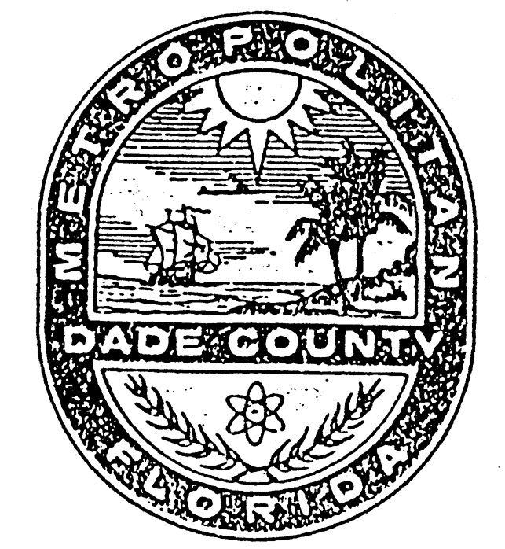

Sec. 21-21. Alcoholic beverage establishments, solicitation of drinks in.
Sec. 21-21.2. Alcoholic beverages and drugs at open house parties.
Sec. 21-21.3. Prohibition of sale of drug-related paraphernalia.
Sec. 21-23. Duty of custodian.
Sec. 21-23.1. Commercial signs along expressways, highways, etc., prohibited.
Sec. 21-24. False alarms and reports.
Sec. 21-24.1. False statements with intent to receive benefit.
Sec. 21-25. Fire and police alarm systems; obstructing or interfering with.
Sec. 21-27. Fires; obedience to firefighters and police officers.
Sec. 21-27.1. Merchandise—Selling, serving, vending in public rights-of-way near schools.
Sec. 21-27.2. Same—Selling, serving, vending in public rights-of-way near public parks.
Sec. 21-27.3. Railroad train whistle and horn noise pollution prohibited.
Sec. 21-28. Noises; unnecessary and excessive prohibited.
Sec. 21-28.1. Open-air concerts, musical broadcasts, etc.
Sec. 21-29. Secondhand dealers.
Sec. 21-29.2. Unauthorized use of official County emblem and stationery prohibited; exceptions.
Sec. 21-29.3. Library Rules of Conduct and Eviction Procedure.
Sec. 21-30. Offenses against public and private property.
Sec. 21-30.1. Public dance halls.
Sec. 21-30.3. Honeybee hives or colonies.
Sec. 21-31.1. Disorderly conduct, loitering; penalties, trial for violations.
Sec. 21-31.3. Warning signs required for retail sale of alcoholic beverages.
Sec. 21-31.4. Aggressive or obstructive panhandling prohibited.
Sec. 21-32. Tip sheets for racing.
Sec. 21-33. Races, automobiles and motorcycles.
Sec. 21-34. Watercourse, canal, drain, ditch, etc.; obstructing, damaging prohibited, penalty.
Sec. 21-36. Sidewalk solicitation of business; enforcement; penalty for section violation.
Sec. 21-36.1. Street corner automobile window washers restricted.
Sec. 21-39. Collection of bond posted for prisoners on bail; repeal of Chapter 10060.
Sec. 21-40. Smoking, spitting within certain public vehicles prohibited.
Sec. 21-42. Obscene materials or performances.
Sec. 21-44. Manholes; safety requirements; penalty.
Sec. 21-45. Vehicles, painted to resemble law enforcement vehicles.
Sec. 21-47. Sexual activity in bathhouses and health clubs.
Sec. 21-47.1. Sexual activity in adult bookstores and adult video stores.
Sec. 21-48. Sale and installation of satellite dish antennas to residential customers.
Sec. 21-21.
(a)
Soliciting drinks. It shall be unlawful for any host, hostess, waiter, waitress, male or female entertainer or employee in a place dispensing alcoholic beverages for consumption on the premises to solicit any beverage, whether an alcoholic beverage or otherwise, for which the customer or patron in such establishment pays.
(b)
Mingling incident to soliciting drinks. It shall be unlawful for any male or female employee or entertainer in places dispensing alcoholic beverages for consumption on the premises to mingle or fraternize with the customers or patrons of such establishments incident to soliciting the purchase of beverages, alcoholic or otherwise, for any such employee and for which the patron or customer in such establishment pays.
(c)
Employing persons to solicit drinks. It shall be unlawful for any owner, operator, manager or other employee of a place dispensing alcoholic beverages for the consumption on the premises to employ or permit on the premises any person to solicit drinks for himself or herself or any other person.
(d)
Loitering to solicit drinks. It shall be unlawful for any man or woman to frequent or loiter in any tavern, cabaret or night club for the purpose of soliciting drinks.
(Ord. No. 58-5, § 24.02, 2-18-58)
Cross reference— Zoning regulations relating to alcoholic beverage establishment, § 33-150 et seq.
Editor's note—
Ord. No. 86-20, § 1, adopted March 18, 1986, added § 21-21.1, concerning a limit on the number of liquor licenses. Ord. No. 86-31, § 1, adopted April 15, 1986, repealed Ord. No. 86-20.
Sec. 21-21.2.
(a)
Definitions. For purposes of this section, the following terms shall be defined as follows:
(1)
"Adult" means a person not legally prohibited by reason of age from possessing alcoholic beverages pursuant to Chapter 562, Florida Statutes, as the same may be amended from time to time.
(2)
"Alcoholic beverage" means any beverage containing more than one (1) percent of alcohol by weight. The percentage of alcohol by weight shall be determined in accordance with the provisions of Section 561.01(4)(b), Florida Statutes, as the same may be amended from time to time.
(3)
"Drug" means "controlled substance" as that term is defined in Section 893.02(3) and 893.03, Florida Statutes, as the same may be amended from time to time.
(4)
"Minor" means a person not legally permitted by reason of age to possess alcoholic beverages pursuant to Chapter 562, Florida Statutes, as the same may be amended from time to time.
(5)
"Open house party" means a social gathering at a residence.
(6)
"Residence" means a home, apartment, condominium or other dwelling unit.
(b)
Responsibility of adults. No adult having control of any residence shall allow an open house party to take place at said residence if any alcoholic beverage or drug is possessed or consumed at said residence by any minor where the adult knew or reasonably should have known that an alcoholic beverage or drug was in the possession of or being consumed by a minor at said residence, and where the adult failed to take reasonable steps to prevent the possession or consumption of the alcoholic beverage or drug.
(c)
Exception. The provisions of this section shall not apply to the use of alcoholic beverages at legally protected religious observances or activities.
(d)
Penalties. The penalties for violation of this section are as follows:
(1)
For the first violation, a fine not exceeding five hundred dollars ($500.00);
(2)
For subsequent violations, a fine not exceeding five hundred dollars ($500.00) or imprisonment in the County Jail for a term not to exceed sixty (60) days, or by both such fine and imprisonment.
(Ord. No. 84-60, §§ 1—4, 7-17-84)
Editor's note—
Inclusion of §§ 1—4 of Ord. No. 84-60, adopted July 17, 1984, has been at the editor's discretion.
Sec. 21-21.3.
Definition: Drug-related paraphernalia means any device, contrivance or instrument as defined in Florida Statutes Sections 893.145 and 893.146.
Prohibitions:
(1)
It is unlawful for any person to own, possess, have under his control, sell or deliver any paraphernalia with the intent that the paraphernalia be used for unlawfully injecting, smoking, swallowing or using an illegal drug.
(2)
It is unlawful to sell to any person younger than twenty-one (21) years of age any paraphernalia that can be used for injecting, smoking, swallowing, processing or storing an illegal drug. This provision shall not apply to the dispensation of hypodermic syringes, needles or other such objects pursuant to a valid prescription by a licensed practitioner, parent, or legal guardian or pharmacist.
(3)
It is unlawful to sell to any person twenty-one (21) years of age and older any paraphernalia which can be used for injecting, smoking, swallowing, processing or storing an illegal drug, if a reasonable person would know that person is acting as a straw purchaser for a person younger than twenty-one (21) years of age.
Penalties. For the first offense of any provision in this Section may result in a criminal penalty of up to two thousand dollars ($2,000.00) and up to sixty (60) days imprisonment. Any subsequent offense of any provision of this Section may result in a criminal penalty of up to two thousand dollars ($2,000.00), up to sixty (60) days of imprisonment and the revocation of all County Occupational Licenses and Certificates of Operation.
(Ord. No. 00-20, § 1, 2-24-00)
Sec. 21-22.
(a)
Purpose and intent. The Miami-Dade County Board of County Commissioners finds and declares that the products and synthetic substances described hereunder are commonly used as alternatives to marijuana. The Board further finds that these synthetic substances are particularly appealing to youth, and that these synthetic substances are potentially dangerous to users in the short term and that the long term effects are not yet known. The Board finds that the products which contain these synthetic substances often use a disclaimer that the product is "not for human consumption" to avoid regulations requiring the manufacturer to list the product's active ingredients. The Board finds drug designers and chemists can quickly create new synthetic drugs once federal or state law makes a particular synthetic drug illegal. As such, the Board finds there is a need to declare illegal the sale, offer for sale, purchase with intent to sell and public display for sale of synthetic substances that mimic illegal controlled substances that have not yet themselves been categorized as illegal controlled substances under federal or state law. The Board further finds that it is proper and necessary for the Board to exercise its authority to safeguard and protect the public health, safety and welfare by taking this action.
(b)
Application. This section shall be applicable in the incorporated and unincorporated areas of Miami-Dade County, with the enforcement of the provision of this section in the unincorporated area being the responsibility of Miami-Dade County and in the incorporated area being the responsibility of the respective municipalities.
(c)
Preemption. This section shall not preempt any municipal ordinance governing this subject area that is more stringent than this ordinance or that declares illegal a substance that is not declared illegal by this ordinance.
(d)
Definitions. For purposes of this section, the following terms apply:
(1)
Structurally similar as used in this section shall mean chemical substitutions off a common chemical backbone associated with synthetic cannabinoids, synthetic cannabinoid-mimicking compounds, 2-[(1R, 3S)-3-hydroxycyclohexyl]-5- (2-methyloctan-2-yl) phenol, also known as CP 47,497 and its dimethyloctyl (C8) homologue, (6aR, 10aR) -9- (hydroxymethyl) -6, 6-dimethyl-3- (2-methyloctan-2-yl) -6a, 7, 10, 10a-tetrahydrobenzo [c] chromen-1-ol, also known as HU-210, 1-Pentyl-3- (1-naphthoyl) indole, also known as JWH-018, 1-Butyl-3- (1-naphthoyl) indole, also known as JWH-073, 1-[2-(4-morpholinyl)ethyl]-3-(1- naphthoyl)indole, also known as JWH-200, JWH-007 (1-pentyl-2-methyl-3-(1-naphthoyl)indole), JWH-015 (2-Methyl-1-propyl-1H-indol-3-yl)-1- naphthalenylmethanone), JWH-019 (Naphthalen-1-yl-(1-hexylindol-3-yl)methanone), JWH-020 (1- heptyl-3-(1-naphthoyl)indole), JWH-072 (Naphthalen-1 -yl-(1-propyl-1H-indol-3-yl)methanone), JWH-081 (4-methoxynaphthalen-1-yl-(l-pentylindol-3-yl)methanone), JWH-122 (1-Pentyl-3-(4-methyl-1-naphthoyl)indole), JWH-133 ((6aR, 10aR)-3-(1,1-Dimethylbutyl)-6a.,7,10,10a-tetrahydro-6,6,9-trimethyl-6H-dibenzo[b,d]pyran)), JWH-175 (3-(naphthalen-1-ylmethyl)-1-pentyl-1H-indole), JWH-201 (1-pentyl-3-(4-methoxyphenylacetyl)indole), JWH-203 (2-(2- chlorophenyl)-1-(1-pentylindol-3-yl)ethanone), JWH-210 (4-ethylnaphthalen-1-yl-(1-pentylindol-3-yl)methanone), JWH-250 (2-(2-methoxyphenyl)-1-(1-pentylindol-3-yl)ethanone), JWH-251 (2-(2-methylphenyl)-1-(1-pentyl-1H-indol-3-yl)ethanone), JWH-302 (1-pentyl-3-(3-methoxyphenylacetyl)indole), JWH-398 (1-pentyl-3-(4-chloro-1-naphthoyl)indole), HU-211 ((6aS, 10aS)-9-(Hydroxymethyl)-6,6-dimethyl-3 -(2-methyloctan-2-yl)-6a,7,10,10a-tetrahydrobenzo[c]chromen-1-ol), HU-308 ([(1R,2R,5R)-2-[2,6-dimethoxy-4-(2-methyloctan-2-yl)phenyl]-7,7-dimethyl-4-bicyclo[3.1.1]hept-3-enyl] methanol), HU-331 (3-hydroxy-2-[(1R,6R)-3-methyl-6-( 1-methylethenyl)-2-cyclohexen-1-yl]-5-pentyl-2,5-cyclohexadiene-1,4-dione), CB-13 (Naphthalen-1-yl-(4-pentyloxynaphthalen-1-yl)methanone), CB-25 (N-cyclopropyl-11-(3-hydroxy-5-pentylphenoxy)-undecanamide), CB-52 (N-cyclopropyl-11-(2-hexyl-5-hydroxyphenoxy)-undecanamide), CP 55,940 (2-[(1R,2R,5R)-5- hydroxy-2-(3hydroxypropyl)cyclohexyl]-5-(2-methyloctan-2-yl)phenol), AM-694 (1-[(5-fluoropentyl)-1H-indol-3-yl]-(2-iodophenyl)methanone), AM-2201 (1-[(5- fluoropentyl)-1H-indol-3-yl]-(naphthalen-1-yl)methanone), RCS-4 ((4-methoxyphenyl)(1-pentyl-1H-indol-3-yl)methanone), RCS-8 (1-(1-(2-cyclohexylethyl)-1H-indol-3-yl)-2-(2-methoxyphenylethanone), WIN55,212-2 ((R)-(+)-[2,3-Dihydro-5-methyl-3-(4-morpholinylmethyl)pyrrolo[1,2,3-de]-1,4- benzoxazin-6-yl]-1-naphthalenylmethanone), WIN55,212-3 ([(3S)-2,3-Dihydro-5-methyl-3-(4-morpholinylmethyl)pyrrolo[1,2,3-de]-1,4-benzoxazin-6-yl]-1-naphthalenylmethanone), or related salts, isomers, and salts of isomers, listed in the controlled substance schedules in Chapter 893, Florida Statutes, as amended, or otherwise prohibited by federal or state law.
(2)
Synthetic cannabinoid herbal incense as used in this section shall mean aromatic or nonaromatic plant material containing a synthetic drug, or to which a synthetic drug has been sprayed, applied or otherwise added, that is distributed in a loose, leafy, powder or granular form or in a compressed block or blocks that can be crushed to result in a powder or granular form, and can be placed into a pipe, cigarette paper or drug paraphernalia for purposes of ingestion by smoking, inhaling or other method, regardless of whether the substance is marketed as not for the purpose of human consumption, and regardless of how the substance is labeled, including, but not limited to, insect repellant, plant food, herbs, incense, nutrient, dietary supplement or spice.
(3)
Synthetic drug as used in this section shall mean any chemical or mixture of chemicals, however packaged, that is structurally similar to synthetic cannabinoids, synthetic cannabinoid-mimicking compounds or any other substance listed in paragraph (1) above, or related salts, isomers, or salts of isomers, as listed in the controlled substance schedules in Chapter 893, Florida Statutes, or otherwise prohibited by federal or state law, as such may be amended from time to time. "Synthetic drug" also shall include any chemical or mixture of chemicals, however packaged, that mimics the effects of tetrahydrocannabinol (also known as THC), the main active ingredient found in marijuana or any other substance listed in paragraph (1) above, or related salts, isomers, or salts of isomers, as Packaging that indicates or implies that a product mimics the effects of marijuana, such as "fake weed" or "fake pot" or any other substance listed in paragraph (1) above, shall create a presumption that the product mimics the effects of tetrahydrocannabinol. "Synthetic drug" shall not include any substance currently listed in the controlled substance schedules in Chapter 893, Florida Statutes, or otherwise prohibited by federal or state law, as such may be amended from time to time.
(e)
Sale, offer for sale and purchase with intent to sell synthetic cannabinoid herbal incense prohibited. It shall be unlawful for any store owner, store manager, store purchasing agent or other person to sell, offer for sale or purchase with intent to sell any synthetic cannabinoid herbal incense as defined herein.
(f)
Public display for sale of synthetic cannabinoid herbal incense prohibited. It shall be unlawful for any store owner, store manager, store purchasing agent or other person to publicly display for sale any synthetic cannabinoid herbal incense as defined herein.
(g)
Affirmative defense. It shall be an affirmative defense to prosecution of a violation of this section if the sale, offer for sale or public display for sale of synthetic cannabinoid herbal incense is pursuant to the direction or prescription of a licensed physician or dentist authorized in the State of Florida to direct or prescribe such act.
(h)
Seizure and destruction of synthetic cannabinoid herbal incense. Synthetic cannabinoid herbal incense prohibited herein may be seized by law enforcement officers and may be destroyed in the same manner used to destroy narcotics and contraband substances, after its use for evidentiary purposes in any judicial proceeding is no longer required.
(i)
Injunctive relief. Miami-Dade County shall have the authority to seek an injunction against any person or business violating the provisions of this section. In any action seeking an injunction, Miami-Dade County shall be entitled to collect its enforcement expenses, including forensic costs, law enforcement costs and reasonable attorney fees and costs incurred at trial and on appeal.
(j)
Subsequent federal or state action. If Congress or a federal agency amends federal law to include a particular substance or otherwise enacts or amends a federal law providing for criminal penalties for the prohibitions of substances set forth in this ordinance, then upon the effective date of such enactment or amendment, the provisions of this ordinance addressed by federal law shall no longer be deemed effective. Any violations of this ordinance committed prior to the Congress or a federal agency enacting a federal law may be prosecuted.
If the Florida Legislature amends the controlled substance schedules in Section 893.01, Florida Statutes, to include a particular substance or otherwise enacts, or amends a state statute providing for criminal penalties for the prohibitions of substances set forth in this ordinance, then upon the effective date of such enactment or amendment, the provisions of this ordinance addressed by the state statute shall no longer be deemed effective.
If the Florida Attorney General pursuant to the rulemaking authority provided in Chapter 893[, Florida Statutes,] adds a particular substance to the controlled substance schedules in Section 893.01, Florida Statutes, then upon the effective date of such enactment or amendment, the provisions of this ordinance addressed by the state statute shall no longer be deemed effective. Any violations of this ordinance committed prior to the Florida Legislature enacting such a statute or the Florida Attorney General promulgating rules may be prosecuted.
(k)
Penalty. Any store owner, store manager, store purchasing agent or other person violating any provision of this section shall be punishable by:
(1)
A fine not to exceed five hundred dollars ($500.00);
(2)
Imprisonment in the county jail for a period not to exceed sixty (60) days;
(3)
Both such fine and imprisonment in the discretion of the court having jurisdiction over the cause;
(4)
Fines in accordance with Chapter 8CC of the Code of Miami-Dade County; or
(5)
Completion of the Miami-Dade County Diversion Program, pursuant to Implementing Order of the Board of County Commissioners.
(Ord. No. 12-44, § 1, 7-3-12)
Sec. 21-22.1.
(a)
Purpose and intent. The Miami-Dade County Board of County Commissioners finds and declares that the products and synthetic substances described hereunder are commonly used as alternatives to amphetamines, cocaine, ecstasy and other illegal drugs. The Board further finds that these synthetic substances are particularly appealing to youth, and that these synthetic substances are potentially dangerous to users in the short term and the long term effects are not yet known. The Board finds that the products which contain these synthetic substances often use a disclaimer that the product is "not for human consumption" to avoid regulations that require the manufacturer to list the product's active ingredients. The Board finds that drug designers and chemists can quickly create new synthetic drugs once federal or state law makes a particular synthetic drug illegal. As such, the Board finds there is a need to declare illegal the sale, offer for sale, purchase with intent to sell and public display for sale of synthetic substances that mimic illegal controlled substances, even though such synthetic substances have not yet themselves been categorized as illegal controlled substances under federal or state law. The Board further finds that it is proper and necessary for the Board to exercise its authority to safeguard and protect the public health, safety and welfare by taking this action.
(b)
Application. This section shall be applicable in the incorporated and unincorporated areas of Miami-Dade County, with the enforcement of the provision of this section in the unincorporated area being the responsibility of Miami-Dade County and in the incorporated area being the responsibility of the respective municipalities.
(c)
Preemption. This section shall not preempt any municipal ordinance governing this subject area that is more stringent than this ordinance or that declares illegal a substance that is not declared illegal by this ordinance.
(d)
Definitions. For purposes of this section, the following terms apply;
(1)
Structurally similar as used in this section shall mean chemical substitutions off a common chemical backbone associated with cathinone, methcathinone, amphetamine, methamphetamine, cocaine, 3,4-methylenedioxymethamphetamine (MDMA), 3,4-methylenedioxymethcathinone, 3,4- methylenedioxypyrovalerone (MDPV), methylmethcathinone, methoxymethcathinone, methylethcathinone, fluoromethcathinone, BZP (benzylpiperazine), fluorophenylpiperazine, methylphenylpiperazine, chlorophenylpiperazine, methoxyphenylpiperazine, DBZP (1,4- dibenzylpiperazine), TFMPP (3-Trifluoromethylphenylpiperazine), MBDB (Methylbenzodioxolylbutanamine), 5-Hydroxy-alpha-methyltryptamine, 5-Hydroxy-N-methyltryptamine, 5-Methoxy-N-methyl-N-isopropyltryptamine, 5-Methoxy-alpha-methyltryptamine, methyltryptamine, 5-Methoxy- N,N-dimethyltryptamine, 5-Methyl-N,N-dimethyltryptamine, 5-Methoxy-N,N-Diisopropyltryptamine, DiPT (N,N-Diisopropyltryptamine), DPT N,N-Dipropyltryptamine) 4-Hydroxy-N,N-diisopropyltryptamine, N,N-Diallyl-5-Methoxytryptamine, DOI (4-Iodo-2,5-dimethoxyamphetamine), DOC (4-Chloro-2,5- dimethoxyamphetamine), 2C-E (4-Ethyl-2,5- dimethoxyphenethylamine), 2C-T-4 (2,5-Dimethoxy-4-isopropylthiophenethylamine), 2C-C (4-Chloro-2, 5-dimethoxyphenethylamine), 2C-T (2,5-Dimethoxy-4-methylthiophenethylamine), 2C- T-2 (2,5-Dimethoxy-4-ethylthiophenethylamine), 2C-T-7 (2,5-Dimethoxy-4-(n)-propylthiophenethylamine), 2C-I (4-Iodo-2,5-dimethoxyphenethylamine), Butylone (beta-keto-N-methylbenzodioxolylpropylamine), Ethcathinone, Ethylone (3,4-methylenedioxy-N-ethylcathinone), Naphyrone (naphthylpyrovalerone), N-N-Dimethyl-3,4-methylenedioxycathinone, N-N-Diethyl-3,4-methylenedioxycathinone, 3,4-methylenedioxy-propiophenone, 2-Bromo-3,4-Methylenedioxypropiophenone, 3,4-methylenedioxy-propiophenone-2-oxime, N-Acetyl-3,4-methylenedioxycathinone, N-Acetyl-N-Methyl-3,4-Methylenedioxycathinone, N-Acetyl-N-Ethyl-3,4-Methylenedioxycathinone, Bromomethcathinone, Buphedrone (alpha-methylamino-butyrophenone), Eutylone (beta-Keto-Ethylbenzodioxolylbutanamine), Dimethylcathinone, Dimethylmethcathinone, Pentylone (beta-Keto-Methylbenzodioxolylpentanamine), (MDPPP) 3,4-Methylenedioxy-alpha pyrrolidinopropiophenone, (MDPBP) 3,4-Methylenedioxy-alpha pyrrolidinobutiophenone, Methoxy-alpha-pyrrolidinopropiophenone (MOPPP), Methyl-alpha-pyrrolidinohexiophenone (MPHP), Benocyclidine (BCP), benzothiophenylcyclohexylpiperidine (BTCP), Fluoromethylaminobutyrophenone (F- MABP), Methoxypyrrolidinobutyrophenone (MeO- PBP), Ethyl-pyrrolidinobutyrophenone (Et-PBP), 3-Methyl-4-Methoxymethcathinone (3-Me-4-MeO- MCAT), Methylethylaminobutyrophenone (Me-EABP), Methylamino-butyrophenone (MABP), Pyrrolidinopropiophenone (PPP), Pyrrolidinobutiophenone (PBP), Pyrrolidinovalerophenone (PVP), Methyl-alpha-pyrrolidinopropiophenone (MPPP), or related salts, isomers, and salts of isomers, listed in the controlled substance schedules in Chapter 893, Florida Statutes, as amended, or otherwise prohibited by federal or state law.
(2)
Synthetic stimulant bath salts as used in this section shall mean any substance, whether in powder, crystal, liquid, tablet or capsule form, containing a synthetic stimulant as defined herein or to which a synthetic stimulant has been added or applied, that can be ingested by smoking, inhaling or other method, regardless of whether the substance is marketed as not for the purpose of human consumption, and regardless of how the substance is labeled, including, but not limited to, bath salts, insect repellant, plant food, herbs, incense, iPod cleaner, nutrient, dietary supplement or spice.
(3)
Synthetic stimulant as used in this section shall mean any chemical or mixture of chemicals, however packaged, that has a stimulant effect on the central nervous system and is structurally similar to cathinone, methcathinone, amphetamine, methamphetamine, cocaine, MDMA or any other substance listed in paragraph (1) above, or related salts, isomers, and salts of isomers, as listed in the controlled substance schedules in Chapter 893, Florida Statutes, or otherwise prohibited by federal or state law. "Synthetic stimulant" shall also include any chemical or mixture of chemicals, however packaged, that mimics the pharmacological effects of cathinone, methcathinone, amphetamine, methamphetamine, cocaine, MDMA or any other substance listed in paragraph (1) above, or related salts, isomers, and salts of isomers. Packaging that indicates, suggests or implies that a product mimics the pharmacological effects of cathinone, methcathinone, amphetamine, methamphetamine, cocaine, ecstasy or any other substance listed in paragraph (1) above, shall create a presumption that the product mimics the effects of the substance. "Synthetic stimulant" shall not include any substance currently listed in the controlled substance schedules in Chapter 893, Florida Statutes, or otherwise prohibited by federal or state law, as such may be amended from time to time.
(e)
Sale, offer for sale and purchase with intent to sell synthetic stimulant bath salts and synthetic stimulants prohibited. It shall be unlawful for any store owner, store manager, store purchasing agent or other person to sell, offer for sale or purchase with intent to sell any synthetic stimulant bath salts as defined herein or any synthetic stimulants as defined herein.
(f)
Public display for sale of synthetic stimulant bath salts and synthetic stimulants prohibited. It shall be unlawful for any store owner, store manager, store purchasing agent or other person to publicly display for sale any synthetic stimulant bath salts as defined herein or any synthetic stimulants as defined herein.
(g)
Affirmative defense. It shall be an affirmative defense to prosecution of a violation of this section if the sale, offer for sale, purchase with intent to sell or public display for sale of synthetic stimulant bath salts as defined herein or synthetic stimulants as defined herein is pursuant to the direction or prescription of a licensed physician or dentist authorized in the State of Florida to direct or prescribe such act.
(h)
Seizure and destruction of synthetic stimulant bath salts and synthetic stimulants. Synthetic stimulant bath salts and synthetic stimulants prohibited herein may be seized by law enforcement officers and may be destroyed in the same manner used to destroy narcotics and contraband substances, after its use for evidentiary purposes in any judicial proceeding is no longer required.
(i)
Injunctive relief. Miami-Dade County shall have the authority to seek an injunction against any person or business violating the provisions of this section. In any action seeking an injunction, Miami-Dade County shall be entitled to collect its enforcement expenses, including forensic costs, law enforcement costs and reasonable attorney fees and costs incurred at the trial level and on appeal.
(j)
Subsequent federal or state action. If Congress or a federal agency amends federal law to include a particular substance or otherwise enacts or amends a federal law providing for criminal penalties for the prohibitions of substances set forth in this ordinance, then upon the effective date of such enactment or amendment, the provisions of this ordinance addressed by federal law shall no longer be deemed effective. Any violations of this ordinance committed prior to Congress or a federal agency enacting a federal law may be prosecuted.
If the Florida Legislature amends the controlled substance schedules in Section 893.01, Florida Statutes, to include a particular substance or otherwise enacts, or amends a state statute providing for criminal penalties for the prohibitions of substances set forth in this ordinance, then upon the effective date of such enactment or amendment, the provisions of this ordinance addressed by the state statute shall no longer be deemed effective.
If the Florida Attorney General pursuant to the rulemaking authority provided in Chapter 893[, Florida Statutes,] adds a particular substance to the controlled substance schedules in Section 893.01, Florida Statutes, then upon the effective date of such enactment or amendment, the provisions of this ordinance addressed by the state statute shall no longer be deemed effective.
Any violations of this ordinance committed prior to the Florida Legislature enacting such a statute or the Florida Attorney General promulgating rules may be prosecuted.
(k)
Penalty. Any store owner, store manager, store purchasing agent or other person violating any provision of this section shall be punishable by:
(1)
A fine not to exceed five hundred dollars ($500.00);
(2)
Imprisonment in the county jail for a period not to exceed sixty (60) days;
(3)
Both such fine and imprisonment in the discretion of the court having jurisdiction over the cause;
(4)
Fines in accordance with Chapter 8CC of the Code of Miami-Dade County; or
(5)
Completion of the Miami-Dade County Diversion Program, pursuant to Implementing Order of the Board of County Commissioners.
(Ord. No. 12-45, § 1, 7-3-12)
Sec. 21-23.
(a)
Acknowledgement that arrested person is in custody. It shall be the duty of any officer having custody of an arrested person to acknowledge that such person is in custody when inquiry is made by a member of such person's immediate family or a duly authorized representative of the family.
(b)
Kangaroo courts outlawed. It shall be the duty of any officer having charge or custody of persons under arrest to prevent such persons from conducting, or being subjected to, summary extrajudicial proceedings, sometimes referred to as kangaroo court, whereby certain prisoners are tried by other prisoners and forfeits demanded.
(Ord. No. 58-5, § 25.03, 2-18-58)
Sec. 21-23.1.
Pending the enactment of new uniform standards and criteria for commercial advertising signs along expressways, no permits shall be issued for the construction of any such signs upon any property abutting any expressways, limited changes or parallel service roads used in connection therewith; and it shall be unlawful for any person, firm, corporation or other legal entity to construct or maintain any new commercial advertising sign, as defined by Section 33-112 of the Code of Miami-Dade County, upon any such property within the territorial areas of Miami-Dade County, Florida.
(Ord. No. 62-30, §§ 1—3, 7-3-62; Ord. No. 62-32, §§ 1, 2, 7-31-62)
Editor's note—
Section 21-23.1, derived from Ord. No. 62-30, §§ 1—3, and regulating commercial signs along expressways, highways, etc., was repealed by Ord. No. 62-32, § 1, enacted as an emergency measure on July 31, 1962. Sec. 2 of Ord. No. 62-32, not being expressly amendatory of this Code, has been codified in this manner at the editor's discretion.
Charter reference— Manner of adopting emergency measures, § 1.02(F).
Editor's note—
Section 21-23.2, pertaining to authorized deputies of constables, has been deleted as obsolete. Constables were an adjunct to the justice of the peace courts, which courts have been abolished. See Fla. Const. Art. V. The section was derived from Ord. No. 69-79, §§ 1—3, adopted November 5, 1969.
Sec. 21-24.
(a)
False alarms. It shall be unlawful for any person intentionally to make, turn in, or give a false alarm of fire, or a false alarm of the need for police or ambulance assistance; and it shall be unlawful for any person to aid or abet in the commission of any such act.
(b)
False reports. It shall be unlawful to make to, or file with, the Miami-Dade Police Department or the Police Department of any municipality any false, misleading or unfounded statement or report concerning the commission or alleged commission of any crime, or offense, occurring within the County or any municipality within the County.
(Ord. No. 58-5, § 21.05, 2-18-58; Ord. No. 69-92, § 1, 12-17-69)
Cross reference— Disseminating false information relating to bombing, § 21-2.
Sec. 21-24.1.
(a)
Declared unlawful. It shall be unlawful for any person directly or indirectly to his own behalf or on behalf of another or others to make to or file with any officer or employee or department or division of the County any false statement or representation with knowledge of the falsity thereof and for the purpose or with the intention of receiving for himself or another or others any benefit, including, but not limited to, any permit, license, service, certificate, contract, the reduction or elimination of any regular fee, assessment or hospital or other charge payable to the County, the securing of employment by the County or the elimination of any charge which is a ground for reduction in grade or in suspension or dismissal from County employment.
(b)
Penalty for violation of provisions. Any person who is convicted of a violation of subsection (a) shall be punished by a fine, or by imprisonment in the County Jail, or both, as provided in Section 1-5 of this Code, provided, however, that if the person so convicted is a County officer or employee he shall, in addition to any other penalty which may be imposed, forfeit his office or employment and shall not be eligible to hold County office or be employed by the County for a period of five (5) years from the date of such conviction.
(c)
Provisions declared cumulative. This section shall be taken to be cumulative and shall not be construed to amend or repeal any other law pertaining to the same subject matter.
(Ord. No. 61-20, §§ 1—3, 5-9-61)
Editor's note—
Ord. No. 61-20 amended this Code to add the provisions designated by the editors as § 21-24.1
Sec. 21-25.
It shall be unlawful for any person to place, or cause to be placed, any article or thing on or upon any sidewalk in such a manner as to interfere with or obstruct the free access or approach to any signal box of the fire and police systems, or without authority from the Miami-Dade Police Director, to run any wire on any of the telegraph poles or fixtures of such systems, or, without authority from the Miami-Dade Police Director, to break, remove or injure or cause to be broken, removed or injured, any of the parts or appurtenances of such systems; or, without authority, to make, or fit, or cause to be made or fitted, any key to the lock of any signal box of such systems; or without authority, to have or retain in his possession any key belonging to or fitted to the lock of any such signal box.
(Ord. No. 58-5, § 21.06, 2-18-58)
Sec. 21-26.
(A)
Prohibitions.
(1)
It shall be unlawful for any person to knowingly resist or obstruct the performance by one, who the person knows or has reason to believe is a police officer or firefighter, of any authorized act within such officer's official capacity.
(2)
It shall be unlawful for any person to knowingly resist or obstruct the authorized service or execution of any civil or criminal process or order of court.
(3)
It shall be unlawful for any person to knowingly obstruct justice. A person obstructs justice when, with intent to prohibit the apprehension or obstruct the prosecution or defense of any person, the person knowingly commits any of the following actions:
(a)
Destroys, alters, conceals or disguises physical evidence, plants false evidence, or furnishes false information; or
(b)
Induces a witness having knowledge material to the subject at issue to leave the State or conceal himself; or
(c)
Leaves the State or conceals himself when the person possesses knowledge material to the subject at issue.
(B)
Penalties. Any person convicted of a violation of this section shall be punished by a fine not to exceed five hundred dollars ($500.00) or imprisonment in the County Jail for a term not to exceed sixty (60) days, or by both such fine and imprisonment in the discretion of the court.
(Ord. No. 58-5, § 21.02, 2-18-58; Ord. No. 69-92, § 2, 12-17-69)
Sec. 21-27.
(a)
Every person who shall be present at a fire shall be subject to the orders of the Miami-Dade Fire Department, the Fire Chief or other officers, including Miami-Dade Police, in extinguishing the fire and removing and protecting property, providing the official character of the officer be known or made known to the person.
(b)
It shall be unlawful for any person to neglect or refuse to obey a lawful order authorized by this section.
(Ord. No. 58-5, §§ 21.03, 21.04, 2-18-58)
Sec. 21-27.1.
(a)
Prohibited. It shall be unlawful for any person to sell, offer for sale, serve, vend, or otherwise dispose of any goods, wares or merchandise, including ice cream, peanuts, popcorn, soda water products, drinks, candy, and food products, in the public rights-of-way, including streets, sidewalks or other public property, within five hundred (500) feet of any property used, owned or operated for public or private school purposes, or for any person to station himself, or operate any stand, establishment or vehicle, for such purpose within the prohibited areas unless within five hundred (500) feet of the school in a secure vending area established and controlled by the school principal. The term "secure vending area" means an area designated by the school principal which is cordoned off by movable barriers, is of sufficient size to accommodate a parked vehicle and student customers in numbers reasonably anticipated by the principal, is supervised by the principal or his or her designee, and for which specific designation thereof is made in writing and filed in the school and at the police station which provides service to the area.
(b)
Enforcement and penalties for violations. It shall be the duty of all County and municipal peace officers to enforce the provisions of this section. Any person convicted of a violation of the provisions of this section shall be punished by a fine not to exceed five hundred dollars ($500.00), or by imprisonment not to exceed sixty (60) days, or both, in the discretion of the court of appropriate jurisdiction.
(Ord. No. 61-31, §§ 1, 2, 7-11-61; Ord. No. 89-74, § 1, 7-25-89)
Cross reference— Hawkers and peddlers disturbing peace of neighborhood, § 21-28(h).
Sec. 21-27.2.
(a)
Prohibited. It shall be unlawful for any person to sell, offer for sale, serve, vend, or otherwise dispose of any goods, wares or merchandise, including ice cream, peanuts, popcorn, soda water products, drinks, candy and food products, in the public rights-of-way, including streets, sidewalks and parkways, within five hundred (500) feet of any public park including beaches and marinas, in the unincorporated area of Miami-Dade County, Florida, or for any person to station himself, or operate any stand, establishment or vehicle, for such purpose within the prohibited areas.
(b)
Enforcement and penalties for violations. It shall be the duty of all County officers to enforce the provisions of this section. Any person convicted of a violation of the provisions of this section shall be punished by a fine not to exceed five hundred dollars ($500.00), or by imprisonment not to exceed sixty (60) days, or both in the discretion of the County Court.
(Ord. No. 64-42, §§ 1, 2, 9-15-64)
Editor's note—
Ord. No. 64-42, §§ 1 and 2 from which § 21-27.2 of this Code is derived, did not designate the manner of codification, hence the same was at the discretion of the editors.
Sec. 21-27.3.
(a)
Definitions. "Person" means any individual, corporation, partnership, other legal entity, or any agent or employee thereof.
(b)
Applicability. The provisions of this section shall be applicable only to public railroad-highway grade crossings within the incorporated or unincorporated areas of Miami-Dade County which are equipped with train-activated automatic traffic control devices which shall include ringing bells, flashing light signals, and automatic crossing gates on both sides of the railroad train track.
(c)
Prohibited acts. Notwithstanding anything in this Code to the contrary, it shall be unlawful and a public nuisance for any person operating a railroad train of a railroad company operating wholly within this State to blow or activate, or permit to be blown or activated, any horn or whistle from the railroad train between 10:00 p.m. and 6:00 a.m. at and in advance of all public railroad-highway grade crossings after the municipality, County, or State has erected signs at such crossings announcing that railroad train horns and whistles will not be sounded during the aforesaid hours.
(d)
Enforcement; costs and attorneys' fees; injunctions; criminal penalty.
(1)
Any municipality or the Director of the Department of Environmental Resources Management or his designee may institute a civil action in a court of competent jurisdiction to seek mandatory and prohibitory injunctive relief to enforce compliance with this section.
(2)
If any person violates any of the provisions of this section, such person, upon conviction of any such violation, shall be punished by a fine not to exceed five hundred dollars ($500.00) in the discretion of the court. Each day or portion thereof of continuing violation shall be deemed a separate violation of this section.
(3)
All municipalities and the Director of the Department of Environmental Resources Management or his designee are hereby authorized to enforce this section and shall recover attorneys' fees, court costs and costs of enforcement and investigation in any action to enforce this section. Any costs recovered by the Director or his designee shall be deposited in a separate County fund to be used for the general enforcement of this section. Any costs recovered by a municipality shall be deposited in a separate fund of the municipality to be used for the general enforcement of this section.
(Ord. No. 81-56, § 1, 5-19-81; Ord. No. 82-83, § 1, 4-6-82; Ord. No. 84-51, § 1, 6-19-84; Ord. No. 86-89, § 1, 11-18-86)
Editor's note—
Ord. No. 81-56, § 1, adopted May 19, 1981; amended the Code by adding § 21-28.1 thereto; in order to avoid duplicate section numbers, the editor has redesignated said section as § 21-27.3
Editor's note—
While § 3 of Ord. No. 82-18, adopted March 16, 1982, stated the Board's intention that said ordinance be codified, it did not assign a section number thereto. Thus, at the editor's discretion, § 1(B), (C) was designated as § 21-27.4, concerning specific railroad grade crossings. Section 2 of Ord. No. 84-51, adopted June 19, 1984, repealed § 21-27.4
Sec. 21-28.
It shall be unlawful for any person to make, continue, or cause to be made or continued any unreasonably loud, excessive, unnecessary or unusual noise. Any person violating any of the provisions of this section shall be punished by (i) a fine not to exceed five hundred dollars ($500.00); (ii) imprisonment in the county jail for a period not to exceed sixty (60) days; (iii) both such fine and imprisonment in the discretion of the court having jurisdiction over the cause; (iv) fines in accordance with Chapter 8CC of the Code of Miami-Dade County; or (v) completion of the Miami-Dade County Diversion Program, pursuant to Implementing Order of the Board of County Commissioners. The following acts, among others, are declared to be unreasonably loud, excessive, unnecessary or unusual noises in violation of this section, but this enumeration shall not be deemed to be exclusive, namely:
(a)
Horns, signaling devices, etc. The sounding of any horn or signaling device on any automobile, motorcycle, bus or other vehicle on any street or public place of the County, except as a danger warning; the creation by means of any such signaling device of any unreasonably loud or harsh sound; and the sounding of any such device for any unnecessary and unreasonable period of time.
(b)
Radios, televisions, phonographs, etc. The using, operating, or permitting to be played, used or operated any radio receiving set, television set, musical instrument, phonograph, or other machine or device for the producing or reproducing of sound in such manner as to disturb the peace, quiet and comfort of the neighboring inhabitants, or at any time with louder volume than is necessary for convenient hearing for the person or persons who are in the room, vehicle or chamber in which such machine or device is operated and who are voluntary listeners thereto. The operation of any such set, instrument, phonograph, machine or device between the hours of 11:00 p.m. and 7:00 a.m. in such manner as to be plainly audible at a distance of one hundred (100) feet from the building, structure or vehicle in which it is located shall be prima facie evidence of a violation of this section.
(c)
Animals, birds, etc. The owning, harboring, possessing or keeping of any dog, animal or bird which causes frequent, habitual or long continued noise which is plainly audible at a distance of one hundred (100) feet from the building, structure or yard in which the dog, animal or bird is located.
(d)
Whistles. The blowing of any locomotive whistle or whistle attached to any stationary boiler except to give notice of the time to begin or stop work or as a warning of fire or danger or upon request of the proper municipal or County authorities.
(e)
Exhausts. The discharge into the open air of the exhaust of any steam engine, stationary internal combustion engine, or motor vehicle except through a muffler or other device which will effectively prevent unreasonably loud or explosive noises therefrom.
(f)
Defect in vehicle or load. The use of any automobile, motorcycle, jet ski, water bike, recreational vehicle, dirt bike or motor vehicle so out of repair, so loaded or in such manner as to create unreasonably loud or unnecessary grating, grinding, rattling or other noise within a residential area.
(g)
Schools, courts, hospitals. The creation of any excessive or unreasonably loud noise on any street adjacent to any school, institution of learning, house of worship or court while the same are in use, or adjacent to any hospital, which unreasonably interferes with the workings of such institutions, or which disturbs or unduly annoys the patients in the hospital, provided conspicuous signs are displayed in such streets indicating that it is a school, hospital or court street.
(h)
Hawkers, peddlers. The shouting and crying of peddlers, hawkers, and vendors which disturbs the peace and quiet of the neighborhood.
(i)
Noises to attract attention. The use of any drum, loudspeaker or other instrument or device for the purpose of attracting attention by creation of any unreasonably loud or unnecessary noise to any performance, show, sale, display or advertisement of merchandise.
(j)
Loudspeakers, etc. The use or operation on or upon the public streets, alleys and thoroughfares anywhere in this County for any purpose of any device known as a sound truck, loud speaker or sound amplifier or radio or any other instrument of any kind or character which emits therefrom loud and raucous noises and is attached to and upon any vehicle operated or standing upon such streets or public places aforementioned. It is provided, however, that this subsection is not intended to be construed in a manner that would interfere with the legitimate use of the foregoing loudspeaker type devices in political campaigns.
(k)
Power tools and landscaping equipment. The operation of noise-producing lawn mowers, lawn edgers, weed trimmers, blowers, chippers, chain saws, power tools and other noise-producing tools which are used to maintain or at a residence out-of-doors between 8:00 p.m. and 7:00 a.m.
(l)
Shouting. Any unreasonably loud, boisterous or raucous shouting in any residential area.
(Ord. No. 58-5, § 21.07, 2-18-58; Ord. No. 96-130, § 1, 9-10-96; Ord. No. 10-52, § 5, 9-21-10)
Cross reference— Vending in public ways near schools, § 21-27.1.
Sec. 21-28.1.
(a)
Permit required; presumption. It shall be unlawful and a violation of this section for any person, firm, partnership or corporation to play, broadcast or transmit music in such a manner as would reasonably be calculated to attract a crowd or cause numbers of persons to congregate in or on any open space, lot, yard, sidewalk or street, or to permit the same to occur on or from any property owned, leased or occupied by said person, firm, partnership, or corporation, without first having obtained a permit to do so from the Miami-Dade Police Department; except no permit shall be required of any person in order to engage in such activity within the residential property wherein such person resides. The use of any amplifier or loudspeaker to play, broadcast or transmit music shall constitute prima facie evidence that the music is being played, broadcasted or transmitted in such a manner as would reasonably be calculated to attract a crowd or cause numbers of persons to congregate.
(b)
Permit contents, time restrictions. Permits issued under this section shall specify the date and time during which the activity authorized by the permit may be conducted. No permit shall issue which encompasses more than one (1) calendar date, or a span of hours in excess of six (6) hours; nor shall the requested activity commence or continue beyond the hour of 11:00 p.m. in any case.
(c)
Permit application information. The application for a permit under this section shall contain the following information:
(1)
The name, date of birth, address and telephone number of the person who will be in charge of the activity for which a permit is requested.
(2)
The name of the person, firm, partnership or corporation seeking the permit.
(3)
The exact date and times for which the permit is sought.
(4)
The exact location of the event for which a permit is requested.
(d)
Filing application for permit. Applications for a permit required under this section must be submitted to the Miami-Dade Police Department at least five (5) days prior to the date of the event for which the permit is requested.
(e)
Procedures for administering permits. The Director of the Miami-Dade Police Department is hereby authorized and directed to promulgate reasonable rules and procedures for the application, issuance and revocation of such permits.
(f)
Criteria for permit issuance; posting of bond. Issuance of the permit required under this section shall be based on a determination by the Miami-Dade Police Department that the event for which a permit is requested does not constitute a threat to public safety; constitute a danger or impediment to the normal flow of traffic; or constitute a potential disturbance of the peace and quiet of persons outside the premises where the event is located. Subsequent permits under this section may be denied to, or a bond required of, any person known to have been convicted for violations of a previous permit under this section. The bond shall be in an amount sufficient to secure the costs of cleanup and repair or replacement of damage or destruction of property and shall be subject to forfeiture for purposes of paying any judgment against the permit holder which may be entered by a court of competent jurisdiction on account of such property damage or destruction or cleanup cost.
(g)
Review of permit denial or revocation. Any person dissatisfied or aggrieved with the decision of the Director of the Miami-Dade Police Department with reference to denial of his application for such permit or the revocation of such permit may, within ten (10) days after such denial or revocation, appeal to and appear before the Manager or his designee; and, upon the affirmance or approval of the action taken by the Director of the Miami-Dade Police Department, such action shall be final and subject to judicial review by writ of certiorari in accordance with the Florida Rules of Appellate Procedure. In the event the Manager or his designee, upon the original review, determines that the applicant is entitled to such permit, then in that event the Director of the Miami-Dade Police Department shall immediately issue such permit.
(h)
Surrender of permit upon demand. It shall be unlawful and a violation of this section for the person designated in the permit application as being in charge of the event for which a permit is sought to fail or refuse to surrender the permit, on demand, to any State, County, or municipal police officer.
(i)
Person designated as being in charge to be present. The person designated in the permit application required in this section as being the person in charge of the event for which the permit is sought must remain at the location of said event during the entire time stated in the permit for which the event is authorized. It shall be unlawful and a violation of this section for said designated person in charge to fail to remain in attendance at the location of the event authorized by the permit for the entire time specified in the permit.
(j)
Penalties for violations. Any violation of any provision of this section shall be punishable by imprisonment in the County Jail for a term not to exceed thirty (30) days or a fine of up to five hundred dollars ($500.00), or both.
(Ord. No. 80-84, § 1, 7-17-80)
Sec. 21-29.
(a)
Definitions.
(1)
Secondhand dealers: For the purpose of this section, the term "secondhand dealers" shall mean any person, firm, corporation or partnership engaged in the business of buying, selling, bartering, exchanging in any manner at retail or wholesale or otherwise dealing for profit in secondhand goods as defined in subsection (2) hereof, whether or not at a fixed place of business. Such term shall include pawnbrokers and all dealers who buy, trade or sell or who make loans of money upon the deposit or pledge of any secondhand goods. Provided, however, that nothing in this section shall apply to:
a.
Registered religious or charitable organizations selling reconditioned or used articles;
b.
Licensed garage sales;
c.
Any person whose primary business is dealing in gold or silver coins if such business is licensed pursuant to law or ordinance.
(2)
Secondhand goods: For the purposes of this section, "secondhand goods" shall mean personal property previously owned or used which is not purchased or sold as new and shall include but shall not be limited to items containing gold, silver, platinum or other precious metal; jewelry, diamonds, gems, and other precious stones; audio and video electronic equipment, including but not limited to television sets, radios, amplifiers, receivers, turntables, tape recorders, videotape recorders, speakers and citizens' band radios; photographic equipment, including but not limited to cameras, lenses, electronic flashes, tripods and developing equipment; machinery; tools, electric motors, calculators, tires, hub caps, musical instruments, typewriters and firearms.
Note—Florida Statutes § 790.33, as amended, preempts and declares null and void all local ordinances, administrative regulations and rules in the field of firearms and ammunition, with limited exceptions set forth in § 790.33, as amended.
(b)
Records of transactions to be kept. Every secondhand dealer shall keep a record approved as to type and form by the Miami-Dade Police Director. The record shall be clearly and legibly written in ink in the English language at the time of each acquisition and shall contain an accurate and true description of each article purchased, bartered, exchanged or received, including a notation as to any identifying markings or characteristics such as serial numbers; the amount of money or other consideration loaned thereon or paid or given therefor; the date and time of the acquisition of such article by the secondhand dealer; the true name of the person dealt with, as nearly as known, as well as such person's signature and thumbprint, place of residence, sex, age, height, weight, build, color of hair, color of eyes, complexion and reasonable proof of identification by an exhibition of a driver's license or other picture identification or other reliable means of identification. The record shall contain the type of identification exhibited, the issuing agency, and the number thereon. For purposes of this section, credit cards, Social Security cards, handwritten identification cards and nonphoto I.D. shall not constitute acceptable I.D. No entry made in such record shall be erased, obliterated or defaced. Every secondhand dealer shall deliver to the Office of the Miami-Dade Police Director a complete and correct copy of said record within forty-eight (48) hours of the date of acquisition of items covered under this section.
A special tag shall be affixed to all items not bearing a serial number. The tag shall exhibit information sufficient to enable ready reference to be made to the portion of the above record which pertains to the item bearing the tag. The County Manager shall issue an administrative order specifying a uniform format and design for the tag. The tag shall not be required to be affixed to articles of clothing. Organizations exempt from federal taxation pursuant to 26 U.S.C. Sec. 501(c)(3) and religious organizations shall be exempt from the requirement of affixing the tag.
The records created and maintained as required by subsections (b) and (c) of this section shall be made available for inspection and copying by any person desiring to do so, in the same manner and in accordance with the same procedures provided for the inspection and duplication of public records by the provisions of Florida Statutes, Section 119.07(1)(a), (b), as set forth at the time this paragraph becomes law.
(c)
Holding period.
(1)
Items containing gold, silver, platinum or other precious metal and jewelry, diamonds, gems and other precious stones shall be held by the secondhand dealer for a period of fifteen (15) days prior to sale, exchange or other disposition thereof. All other property covered by this section acquired in the course of a secondhand dealer's business shall be held for a period of thirty (30) days prior to disposition thereof; provided, however, that the provisions of this subsection shall not be applicable when the person known by the secondhand dealer to be the true owner of any article desires to redeem, repurchase or recover such article at any time within the required hold period. The secondhand dealer shall keep a record of the proof of ownership presented by the true owners.
(2)
If a police officer has probable cause to believe that an item acquired by a secondhand dealer in the course of his business is the subject of a criminal investigation, such police officer may apply to a court of competent jurisdiction for an order which would prohibit the release of such property for a period of sixty (60) days. Upon release of such property, the secondhand dealer shall keep a record of the disposition thereof.
(d)
Inspection of premises and records. Any law enforcement officer shall, upon authorization of the Miami-Dade Police Director or his designee, have the right to inspect during normal business hours the records required to be kept by this section.
(e)
Certain acts and practices prohibited. Each of the following acts of either a secondhand dealer or any of his or her employees is hereby declared to be unlawful and shall subject the person convicted thereof by a court of competent jurisdiction to the penalties prescribed by Section 1-5, Code of Miami-Dade County:
(1)
Knowingly purchasing or otherwise acquiring any article covered by this section from:
a.
Any person under the influence of drugs or alcohol, or
b.
Any minor unless said minor has the written consent of his or her parent or guardian, or
c.
Any person using a name other than his own.
(2)
Refusing, denying or interfering with the lawful inspection of the records required to be kept by this section by a police officer.
(3)
Disposing of any property covered by this section contrary to the provisions of this section.
(4)
Failing or neglecting to comply with any applicable provision of this section.
(5)
Possessing property owned by Miami-Dade County, or any municipality within Miami-Dade County without documentation of the receipt of such property as required by this ordinance is prohibited and shall subject the person convicted thereof to a fine not to exceed one thousand dollars ($1,000.00) or imprisonment in the county jail for a term not to exceed one (1) year imprisonment.
(f)
Hours of operation. No pawnshop shall engage in business within the incorporated or unincorporated areas of Miami-Dade County except between the hours of 7:00 a.m. and 7:00 p.m.
(g)
Applicability and enforcement. This chapter [section] shall apply to both the incorporated and unincorporated areas, and in the unincorporated areas shall be enforced by the County and in the incorporated areas shall be enforced by the municipalities unless the County is notified by any municipality, in the form of a resolution of the governing council or commission that it is desirous of having the County enforce this chapter [section] in which event enforcement within the incorporated areas shall be by the County.
(Ord. No. 81-64, § 1, 6-2-81; Ord. No. 89-1, § 1, 1-17-89; Ord. No. 94-27, § 1, 2-1-94; Ord. No. 94-189, § 1, 10-7-94; Ord. No. 97-146, § 1, 9-9-97; Ord. No. 00-161, § 1, 12-7-00)
Editor's note—
Formerly, § 21-29 pertained to pawnbrokers and secondhand dealers and derived from Ord. No. 58-5, § 24.04, enacted Feb. 18, 1958; Ord. No. 66-16, § 1, adopted April 5, 1966; and Ord. No. 66-27, § 1, adopted June 7, 1966. Ord. No. 81-64 repealed said section and re-enacted it in its entirety.
Sec. 21-29.1.
(a)
It shall be unlawful for any person, firm, corporation or other legal entity to engage in any private business, commercial activity, or to undertake to provide any service for compensation, or to advertise or display merchandise, or to transact any business for profit, or to solicit business, on any property or facilities owned or operated by Miami-Dade County without first obtaining a permit, concession, lease, or other authorization in writing approved or authorized by the Board of County Commissioners. A County occupational license shall not authorize any person, firm, corporation or other legal entity to engage in any of the prohibited activities on County property or facilities.
(b)
It shall be unlawful for any person, firm, corporation or other legal entity to post, display or distribute any signs, advertisements, circulars, handbills, printed or written matter relating to any business or commercial activities on any property or facilities owned or operated by or for Miami-Dade County, without first obtaining a written permit issued or authorized by the Board of County Commissioners; provided that the provisions of this section shall not be applicable to licensees, concessionaires, lessees or agencies of the County.
(c)
The provisions of this section shall be applicable to all lands, buildings, improvements, facilities, equipment, projects, and all property, either real or personal, owned, operated, or under the custody or control of Miami-Dade County, or its agents, representatives, officials, departments or instrumentalities, except public streets, roads, highways and sidewalks.
(d)
Any person, firm, corporation or other legal entity violating any provisions of this section shall, upon conviction thereof, be punished by a fine not to exceed five hundred dollars ($500.00), or by imprisonment in the County Jail for a period not to exceed sixty (60) days, or by both such fine and imprisonment, in the discretion of the County Court.
(e)
It shall be the duty of the Miami-Dade Police and the police officers of each municipality to enforce the provisions of this section against any person, firm, corporation or other legal entity found violating the same within their jurisdiction.
(Ord. No. 64-22, §§ 1—5, 5-19-64)
Editor's note—
Ord. No. 64-22, enacted May 19, 1964, effective May 29, 1964, amended the Code to read as set forth above and has been codified by the editors as § 21-29.1 for classification purposes.
Annotation—AO 8-5
Sec. 21-29.2.
(a)
Official County emblem defined. As used herein the official County emblem shall mean the emblem adopted and approved by Miami-Dade County Resolution No. 1860 dated July 29, 1958, which adopted and approved the following identifying symbol of Miami-Dade County, Florida, as the official emblem thereof:
(b)
Prohibition. It shall be unlawful and a violation of this section for any person, firm, corporation or other legal entity to print for the purpose of sale or distribution or circulate, publish, use or offer for sale any letters, papers, documents or items of merchandise which simulate the official emblem of Miami-Dade County or the stationery of a real or fictitious Miami-Dade County agency, department or instrumentality without the express written authority of the County Manager or designee.
(c)
Exceptions. The provisions of this section shall not be applicable to Miami-Dade County, its agencies, departments, instrumentalities, quasi-judicial and advisory bodies, acting within the scope of their official capacities or contractors thereof acting within the scope of their services to be performed.
(Ord. No. 78-1, § 1, 1-3-78)
Sec. 21-29.3.
(1)
Mission Statement.
(a)
The mission of Miami-Dade Public Library System, the "Library," is to maintain and improve the library services reflecting the informational, educational, and recreational needs of our diverse community.
(b)
In order to maintain an appropriate atmosphere conductive to accomplishing this mission, the Library has adopted these Rules of Conduct.
(2)
Rules of Conduct. The following actions, as well as any other behavior that disrupts the public use of the Library, are prohibited. Anyone who violates these rules may be asked by staff to leave the Library premises. The Library reserves the right to immediately discharge a patron that is dangerous or in any way threatening library staff or other patrons.
(a)
Level One Offense:
(i)
For the following Level One offenses, after having first been warned by Library staff to cease the inappropriate behavior, a second or continued violation will result in access to the Library premises being denied for the remainder of the day. If the patron feels that his one-day expulsion is unfair, Library staff will contact a supervisor who will make the final expulsion determination.
(ii)
If feasible, a patron who is asked to leave the premises will be given a copy of the Rules of Conduct and will be told that he/she is welcome back in the Library the next day as long as the patron abides by all of the Rules.
(iii)
Level One Prohibited Activities:
A)
Smoking;
B)
Eating or drinking, except in authorized areas;
C)
Bringing pets into the building, except service animals;
D)
Sleeping;
E)
Placing feet on tables or chairs;
F)
Loitering (remaining in the Library without being engaged in purposes for which the Library was opened, such as reading, writing and quiet contemplation);
G)
Leaving individuals requiring care unattended for long periods of time or at closing;
H)
Loud, boisterous or disruptive behavior;
I)
Bathing, shaving, washing clothes, or other inappropriate uses of Library restrooms;
J)
Bodily hygiene that is so offensive as to constitute a nuisance to patrons or staff;
K)
Operating any radio, telephone, or other device at a volume where others can hear it;
L)
Inadequate attire (shirt and shoes are required);
M)
Rollerskating, rollerblading, cycling or skateboarding on Library property;
N)
Failing to abide by all Library rules and regulations as set forth herein, or as posted or related by Library staff;
O)
Overt displays of gang behavior;
P)
Failure to abide by the rules regarding public access computers, which are:
• Users must sign-in at the Service Desks;
• Users are limited to one 45-minute session per day;
• Printing must be completed before the session ends;
• Altering or abusing computer equipment and/or settings is prohibited;
• Users need to be considerate and should refrain from displaying objectionable materials because Internet workstations are located in public areas.
(iv)
Subsequent violations of Level One offenses may be considered a Level Two offense.
(b)
Level Two Offense:
(i)
Upon violation of a Level Two offense, a patron will be evicted from the Library premises for an initial period of seven days. Library staff will give the patron a "Notice of Eviction" which advises the patron of his ability to appeal the eviction.
(ii)
Patrons may request a hearing to appeal a Level Two eviction by submitting the "Hearing Request Form," along with a copy of the "Notice of Eviction," by mail and postmarked within forty-eight hours of the date of the "Notice of Eviction," to the Director, Miami-Dade Public Library System, 101 West Flagler, Miami, Florida 33130. Failure to make a timely request for a hearing will render the eviction decision final. The hearing will be held before one or more members of the Library Administration, who have had no prior involvement in the eviction decision.
(iii)
Level Two Prohibited Activities:
A)
Repeated violations of Level One offenses;
B)
Harassing, intimidating, stalking or prolonged staring at patrons or staff;
C)
Using abusive language in a threatening manner to other people;
D)
Being drunk, intoxicated, or disorderly;
E)
Sexual misconduct;
F)
Damaging, destroying, or defacing Library property (the Library may require full restitution from patrons who damage or deface Library materials prior to restoring visitation);
G)
Refuse, upon leaving, to allow a librarian, security guard or other authorized employee to inspect a package, backpack, or other container which is of sufficient size to contain a library book, provided that there is prominently displayed at each public entrance a sign which reads as follows:
WARNING-IN ORDER TO ASSURE THAT LIBRARY BOOKS AND OTHER MATERIALS ARE NOT REMOVED FROM THIS BUILDING WITHOUT AUTHORIZATION, THE LIBRARY RESERVES THE RIGHT TO INSPECT ALL PACKAGES, BACKPACKS, SHOPPING BAGS, LARGE HANDBAGS AND OTHER CONTAINERS BEING TAKEN OUT OF THE LIBRARY, ENTRY INTO THIS LIBRARY CONSTITUTES CONSENT TO SEARCH.);
H)
Drinking alcoholic beverages in the Library;
I)
Engaging in any activity prohibited by law;
J)
Removing Library materials without checking them out.
(iv)
Subsequent violations of Level Two offenses may result in progressively longer evictions of up to a one-year period.
(c)
Level Three Offense:
(i)
Upon violation of a Level Three offense, a patron will be evicted from the Library premises for a period of at least one year. Library staff will give the patron a "Notice of Eviction" which advises the patron of his ability to appeal the eviction.
(ii)
Patrons may request a hearing to appeal a Level Three eviction by submitting the "Hearing Request Form," along with a copy of the "Notice of Eviction," by mail and postmarked within ten days of the date of the "Notice of Eviction," to the Director, Miami-Dade Public Library System, 101 West Flagler, Miami, Florida 33130. The hearing of Level Three evictions will be held before an independent Hearing Examiner. Failure to make a timely request for a hearing will render the eviction decision final.
(iii)
Level Three offenses are those that involve physically threatening behavior.
(Ord. No. 82-14, § 3, 3-2-82; Ord. No. 04-102, § 1, 5-11-04)
Sec. 21-30.
(a)
No person in the County shall:
(1)
Willfully, maliciously, wantonly or otherwise injure, deface, destroy or remove real property or improvements thereto, or movable or personal property, belonging to the County, any municipality in the County, any state or Federal agency in the County, or to any person in the County. For the purpose of this ordinance, "person" shall include any individual or entity as defined by Section 1.01(3) of the Florida Statutes.
(2)
Destroy, damage, or vandalize, any County property, including but not limited to the swale area in the public right-of-way.
(3)
Injure or knowingly suffer to be injured any meter, valve, valve or meter identification, piping or appurtenance thereto, connected with or belonging to a gas distribution system in the County, including portions thereof on private property and within buildings. No person shall tamper or meddle with or alter the condition of any meter, valve or meter identification, or other part of such system in the County, or appliance connected thereto, in such manner as to cause loss or damage to the owner of such facilities or the users thereof, or to create a hazard to life and property.
(4)
Tamper with, injure, deface, destroy or remove any sign, notice, marker, fire alarm box, fireplug, topographical survey monument, or any other personal property erected or placed by the County.
(5)
Place or erect upon any public way or passageway to any building, an obstruction of any type, provided that this section shall not prevent duly authorized or required placing of temporary barriers or signs for the purpose of safeguarding the public.
(6)
Move, disturb, or take any earth, stone or other material from any public street, alley, park or other public ground.
(7)
Remove or attempt to remove a library book or other library property from a public library without first obtaining authorization to do so from the librarian or other authorized person.
(b)
Any person violating this ordinance shall: be punished by a fine not to exceed five hundred dollars ($500) for the first offense and each subsequent offense and by imprisonment in the County jail for a term not to exceed sixty (60) days. In addition to such punishment, the court shall order any violator to make restitution to the victim for damages or loss caused directly or indirectly by the defendant's offense in the amount or manner determined by the Court. In the case of a minor, the parents or legal guardian shall be jointly and severably liable, with the minor for payment of all fines and restitution. Failure of the violator to pay the fine or restitution shall be punished by an additional term of imprisonment in the County jail not to exceed twenty (20) days.
(c)
This ordinance shall be applicable in incorporated and unincorporated areas of Miami-Dade County.
(Ord. No. 58-5, § 21.01, 2-18-58; Ord. No. 71-29, § 3, 3-18-71; Ord. No. 82-14, § 2, 3-2-82; Ord. No. 99-66, § 1, 6-8-99; Ord. No. 07-47, § 1, 3-6-07)
(a)
Definitions. For the purpose of this section, the following terms apply.
(1)
"Broad tipped indelible marker" means any felt tip marker, or similar implement, which contains a fluid which is not water soluble and which has a flat or angled writing surface one-half (½) inch or greater.
(2)
"Bona fide evidence of majority" means a document issued by a federal, state, county, or municipal government or agency thereof, including but not limited to, a motor vehicle operator's license, or registration certificate issued under the Federal Selective Service Act, a passport, or an identification card issued to a member of the armed forces which identifies an individual and provides proof of the age of such individual.
(3)
"Business day" means any day of the week except Saturday, Sunday, or legal holidays.
(4)
"Commercial property" means real and personal property that is used for business, commercial, or for-profit purposes including but not limited to vehicles, dumpsters, advertisements and signs. It shall be prima facie evidence that a property is commercial if it (1) is located in a business, commercial, office, apartment, hotel or warehouse zoning district; (2) contains commercial or business advertising visible from the right-of-way; or (3) has posted on its premise a business occupational license. "Commercial property" shall include advertising and billboards. "Commercial property" shall include residential property of four (4) or more units that is rented or advertised for rent. "Commercial property" shall not include (1) single family homes or residential property of three (3) or less units; (2) property owned by governments; (3) property used for non-profit purposes by educational institutions, charities, or religious institutions; (4) property used for agricultural purposes except for those portions of the property containing a business open to the general public.
(5)
"Corrective action" mean an act required to remove or effectively obscure graffiti that is visible from the right-of-way.
(6)
"Director" mean the Director of the Public Works Department or his or her designee.
(7)
"Non-commercial property" means all property that is not included in the definition of commercial property in this section.
(8)
"Owner" means any and all persons with legal and/or equitable title to real property in Miami-Dade County as their names and addresses are shown upon the records of the Property Appraiser Department.
(9)
"Supervising adult" means an individual twenty-one (21) years of age or older who has been given responsibility by the minor's parents, legal guardian, or other lawful authority to supervise the minor.
(10)
"Used or intended to be used" includes usage in the course of a violation or usage to transport a violator to or from the scene of a violation.
(b)
Application of section.
(1)
This section shall be applicable in incorporated and unincorporated areas of Miami-Dade County, with the enforcement of the provision of this section in the unincorporated area being the responsibility of Miami-Dade County and in the incorporated area being the responsibility of the municipalities.
(c)
Affect on municipal ordinances. It is the intent of the Board to provide a minimum standard for those graffiti offenses provided in subsections (f), (h), and (i) in incorporated areas of Miami-Dade County. Any municipality in Miami-Dade County may adopt more stringent graffiti regulations and/or higher penalties for graffiti offenses than those provided herein.
(d)
Graffiti prohibited.
(1)
No person shall write, paint, or draw any inscription, figure, or mark of any type on any public or private building or structure or other real or personal property, owned, operated, or maintained by a governmental entity or any agency or instrumentality thereof or by any person, firm, or corporation, unless the express prior written permission of the owner, owner's agent, manager or operator of the property has been obtained and filed with the Public Works Department, Graffiti Coordinator. No filing is required if the owner, owner's agent, manager or operator of the property has obtained a valid painting permit in accordance with other pertinent law.
(2)
Any person violating this subsection shall be punished by a fine of two hundred and fifty dollars ($250.00) for the first offense; five hundred dollars ($500.00) for the second offense and one thousand dollars ($1,000.00) for each subsequent offense or by imprisonment in the County jail for a term not to exceed sixty (60) days or by both fine and imprisonment at the discretion of the court.
(I)
In the case of a minor, the parents or legal guardian shall be jointly and severably liable with the minor for payment of all fines.
(II)
Failure of the parents or legal guardian to make payment, will result in the filing of a lien on the parents or legal guardian's property to include the fine and administrative costs.
(III)
Upon an application and finding of indigency, the court may decline to order fines against the minor or parents.
(3)
In addition to any punishment listed in subsection (d)(2), the court shall order any violator to make restitution to the victim for damages or loss caused directly or indirectly by the defendant's offense in the amount or manner determined by the court.
(I)
In the case of a minor, the parents or legal guardian shall be ordered jointly and severably liable with the minor to make such restitution.
(4)
In addition to any punishment listed in subsection (d)(2) or restitution ordered under subsection (d)(3), the court shall order any violator to perform monitored community service in the removal of graffiti of not less than forty (40) hours and not more than one hundred (100) hours.
(5)
Forfeiture of personal property. All personal property, including, but not limited to automobiles and bicycles, used or intended to be used in violating this subsection, shall be forfeitable to Miami-Dade County. In forfeiting such personal property, the County shall follow the procedures outlined in Section 31-116 et seq. of the Miami-Dade County Code concerning forfeitures of passenger motor vehicles for violation of the transportation code, except that one (1) violation of this subsection shall be the basis for forfeiture; the County Manager or his designee shall act as the party for the County in lieu of CSD as recipient of all request for hearings and for all other purposes under the procedure; the property subject to forfeiture shall be personal property as described above. In any forfeiture under this section, the court shall not order a forfeiture unless it finds that the forfeiture is commensurate with the severity of the violation to the extent required by Florida and Federal Constitution.
(I)
Municipalities may establish their own system for the forfeiture of personal property.
(e)
Graffiti removal by the County.
(1)
Whenever the County becomes aware of the existence of graffiti on any property, including any structure or improvement, that abuts the public right-of-way within any unincorporated area of the County, County personnel are authorized to immediately remove or obscure such graffiti.
(2)
For purposes of this subsection (e) only, "property that abuts the public right-of-way" means property that can be accessed by County personnel without substantially encroaching onto private property, such as subdivision walls and other structures and improvements lying at or near the public right-of-way.
(3)
General notice. Property owners are hereby put on notice of the County's intention to immediately obscure graffiti placed on walls, buildings and other surfaces that abut the public right-of-way. Team Metro shall also publish notice once during each week for four (4) consecutive weeks in the Miami Herald and shall substantially comply with Chapter 50, Florida Statutes. Any property owner who objects to graffiti being obscured on property abutting the public right-of-way shall file a statement of objection with the County Manager or his designee within thirty (30) days of the date of the final published notice. Such objection shall be effective for one (1) year. A new objection must be filed each year thereafter to preserve the objection. If an objection is filed, subsection (e) shall not apply to the property owner's property. The County reserves the right, however, to ensure that graffiti is obscured on such property by citation and fine under subsection (g).
(4)
Specific notice to affected property owner. The appearance of graffiti on a wall, building or other surface abutting the public right-of-way shall serve as notice to the property owner that the graffiti is subject to being obscured or removed by the County. Any property owner who has not filed a statement under subsection (3) and who desires to obscure or remove the graffiti himself shall (i) immediately remove the graffiti; or (ii) notify the County Manager or his designee immediately of his intention to remove the graffiti within forty-eight (48) hours. Graffiti not removed within forty-eight (48) hours is subject to removal by the County.
(5)
Nothing contained in this subsection (e) shall be construed to supersede or otherwise affect the provisions contained in subsection (g).
(f)
Graffiti removal by the property owner.
(1)
Whenever the County becomes aware of the existence of graffiti visible from the public right-of-way on any property, real or personal, including structures or improvements within the County, a Code Enforcement Officer is authorized, upon such discovery, to give, or cause to be given, notice to take corrective action to the property owner or the property owner's agent or manager.
(2)
For commercial property, the property owner or the property owner's agent or manager shall take corrective action within two (2) business days from receipt or posting of the notice listed in subsection (f)(1). For non-commercial property, the property owner or the property owner's agent or manager shall take corrective action within fourteen (14) calendar days from receipt or posting of the notice listed in subsection (f)(1).
(3)
If the property owner or the property owner's agent or manager fails to take corrective action, he or she shall be cited pursuant to Chapter 8CC of this Code or by any municipal citation system.
(I)
For commercial property, the property owner or the property owner's agent or manager has two (2) business days from receipt or posting of the citation to file for an appeal hearing before an 8CC hearing officer, or municipal hearing officer, or take corrective action. For non-commercial property, the property owner or the property owner's agent or manager has seven (7) calendar days from receipt or posting of the citation to file for an appeal hearing before an 8CC Hearing Officer, or municipal hearing officer, or take corrective action.
(II)
If the owner or the property owner's agent or manager does not appeal the citation, they shall pay the fine in accordance with Section 8CC-10 of the Code, or in accordance with the applicable municipal citation system. Thereafter, each day the owner, or property owner's agent or manager fails to take corrective action counts as a continuing violation.
(4)
The above listed hearing shall be conducted not sooner than five (5) calendar days, but not later than twenty (20) calendar days after receipt of the appeal.
(5)
Notwithstanding any provision of this Chapter or Chapter 8CC of the Miami-Dade County Code to the contrary, the appeal of a violation of this section shall not extend or otherwise change the time period for corrective action of the violation. Continuing penalties as provided for herein and in Section 8CC-4(c) shall accrue upon the expiration of the time period provided in subsection (3) above.
(6)
The Director, or City Manager of a municipality, shall cause corrective action to take place at the owner's expense after two (2) business days for commercial property, or fourteen (14) calendar days for non-commercial property from the date of citation or date of the rendering of the Hearing Officer's order, which finds the violator guilty.
(I)
The County or municipality shall have the right to enter upon private property to the extent necessary to take corrective action. Entry into any dwelling or structure is expressly prohibited.
(II)
After taking corrective action, the Director, or City Manager of a municipality, shall file a lien in the amount of all expenses incurred in correcting the condition, including all fines, continuing penalties and actual administrative costs.
(III)
Such liens shall be enforceable in the same manner as a tax lien and may be satisfied at any time by payment thereof, including accrued interest. Upon such payment, the Clerk of the Circuit Court shall, by appropriate means, evidence the satisfaction and cancellation of such lien upon the record thereof. Notice of such lien may be filed in the Office of the Clerk of the Circuit Court and recorded among the public records of Miami-Dade County, Florida.
(7)
It shall be an affirmative defense preventing any fines from issuing under this section if the property owner proves at a hearing that, at the subject location, he or she had been victimized by graffiti three (3) or more times within the calendar year of the violation and had removed or effectively obscured the graffiti within two (2) business days of its appearance for commercial property, or within fourteen (14) days of its appearance for non-commercial property, or within the times provided in this ordinance if a notice or violation was issued. This mitigation provision applies only to fines and shall not prevent the Director, pursuant to section (d)(6), from taking corrective action and liening the property for costs, if the property owner fails to take corrective action.
(g)
Possession of spray paint and markers.
(1)
Possession of spray paint and markers with intent to make graffiti is prohibited. No person shall carry an aerosol spray paint can or broad-tipped indelible marker with the intent to violate the provisions of subsection (d)(1).
(2)
Possession of spray paint and markers by minors on public property prohibited. No person under the age of eighteen (18) shall have in his or her possession any aerosol container of spray paint or broad-tipped indelible marker while on any public property, highway, street, alley or way except in the company of a supervising adult.
(3)
Possession of spray paint and markers by minors on private property prohibited without consent of owner. No person under the age of eighteen (18) shall have in his or her possession any aerosol container of spray paint or broad-tipped indelible marker while on any private property unless the owner, agent, or manager, or person in possession of the property knows of the minor's possession of the aerosol container or marker and has consented to the minor's possession while on his or her property.
(4)
Any person violating this subsection (g)(1), (2) or (3) shall be punished by a fine of two hundred and fifty dollars ($250.00) for a first offense, and five hundred dollars ($500.00) for a second offense and one thousand dollars ($1,000.00) for each subsequent offense, or by imprisonment in the County Jail for a term not to exceed sixty (60) days, or by both fine and imprisonment in the discretion of the court.
(I)
In the case of a minor, the parents or legal guardian shall be responsible for payment of all fines.
(II)
Failure of the parents or legal guardian to make payment will result in the filing of a lien on the parents or legal guardian's property to include the fine and administrative costs.
(5)
In addition to any punishment, the court shall order any person found in violation of subsection (g)(1), (2) or (3) to make restitution to the victim for damage or loss caused directly or indirectly by the defendant's offense in a reasonable amount or manner to be determined by the court.
(I)
Where the defendant is a minor, the parent or legal guardian shall be jointly and severably liable with the minor to make such restitution.
(6)
In addition to any punishment listed in subsection (g)(5) or restitution ordered under subsection (g)(6), the court shall order any person found in violation of subsection (g)(1), (2), or (3) to perform monitored community service in the removal of graffiti of not less than forty (40) hours and not more than one hundred (100) hours.
(h)
Storage and sale of spray paint and markers.
(1)
Sale to minors prohibited. No person or firm shall sell or cause to be sold to any person under the age of eighteen (18) years, and no person under the age of eighteen (18) years shall buy any aerosol container of spray paint or broad-tipped indelible markers. Evidence that a person, his or her employee, or agent demanded and was shown bona fide evidence of majority and acted upon such evidence in a transaction or sale shall be a defense to any prosecution thereof.
(2)
Display or spray paint and markers. Every person who owns, conducts, operates or manages a retail commercial establishment selling aerosol containers of spray paint or broad-tipped indelible markers shall:
(I)
Place a sign in clear public view at or near the display of such products stating:
"GRAFFITI IS A CRIME. ANY PERSON DEFACING REAL OR PERSONAL PROPERTY NOT HIS OR HER OWN WITH PAINT OR ANY OTHER LIQUID OR DEVICE IS GUILTY OF A CRIME PUNISHABLE BY IMPRISONMENT OF UP TO 60 DAYS AND/OR A FINE UP TO $1,000.00."
(II)
Place a sign in the direct view of such persons responsible for accepting customer payment for aerosol containers of spray paint or broad-tipped indelible markers.
"IT IS A VIOLATION OF THE LAW TO SELL AEROSOL CONTAINERS OF SPRAY PAINT OR BROAD-TIPPED INDELIBLE MARKERS TO PERSONS UNDER 18 YEARS OF AGE PUNISHABLE BY A CIVIL FINE OF $100.00."
(III)
Store or cause such aerosol containers or marker pens to be stored either (a) in the direct line of sight from the cash-register work station or any other work station that is normally continuously occupied while the store is open, or (b) in a place not accessible to the public in the regular course of business without employee assistance, pending legal sale or disposition of such marker pens or paint containers.
(3)
Violation of subsection (h)(1) or (2) shall result in a civil penalty of one hundred dollars ($100.00) for a first offense and two hundred dollars ($200.00) for subsequent offenses. When three (3) violations of subsection (h)(1) or (2) occur within any calendar year at a commercial establishment, that establishment shall be subject to an injunction from a court of competent jurisdiction forbidding the sale of aerosol containers of spray paints and broad-tipped indelible markers for a period up to two (2) years. Violation of such injunction shall be punished by a fine of one hundred dollars ($100.00) per day of violation in addition to any other penalties levied by the Court. Failure to make payment of fines will be subject to an injunction from a court of competent jurisdiction forbidding the sale of aerosol containers of spray paints and broad-tip indelible markers until payment of the fine, attorney's fees and costs.
(i)
Anti-graffiti trust fund.
(1)
There is hereby created the Miami-Dade County Anti-Graffiti Trust Fund. Civil and criminal penalties assessed against violators of this section shall be placed in the fund. The Board of County Commissioners shall direct the expenditures of monies in the fund. Such expenditures shall be limited to the payment of the cost of removal of graffiti, the payment, at the discretion of the County Manager, or rewards for information leading to the arrest, taking into custody, adjudication, referral to pre-trial programs or conviction for violation of this section or other state laws relating to graffiti, the costs of administering this ordinance, and such other public purposes as may be approved by the Miami-Dade County Commission by resolution.
(2)
Each jurisdiction that enforces the provisions of this section shall have the right to create its own anti-graffiti trust fund to fund anti-graffiti measures.
(Ord. No. 94-199, § 2, 11-1-94; Ord. No. 94-239, § 1, 12-20-94; Ord. No. 96-133, § 1, 9-10-96; Ord. No. 97-25, § 2, 4-8-97; Ord. No. 97-31, § 1, 4-15-97; Ord. No. 98-33, §§ 1, 2, 2-19-98; Ord. No. 09-88, § 1, 10-6-09)
Editor's note—
Ord. No. 94-199, § 1, adopted Nov. 1, 1994, repealed former § 21-30.01, relative to graffiti, and § 2 of said ordinance enacted a new § 21-30.01 to read as herein set out. The provisions of former § 21-30.01 derived from Ord. No. 88-113, § 1, adopted Dec. 6, 1988; Ord. No. 91-40, § 1, adopted April 2, 1991; Ord. No. 93-115, § 1, adopted Nov. 3, 1993; Ord. No. 94-46, § 2, adopted March 17, 1994.
Sec. 21-30.1.
(a)
Definitions of terms.
The term "public dance" or "public ball," as used under this section, shall be taken to include any dance or ball conducted in connection with instruction in dancing for hire, and any dance or ball to which admission may be had by the payment of a fee or by the purchase, possession, or presentation of a ticket or token, or in connection with which a charge is made for caring for clothing or other property; and any dance or ball to which the public generally may gain admission with or without the payment of a fee.
The term "dance hall" or "ballroom," as used in this section, shall be taken to include any room, place, or space, in which a public dance or public ball, as herein defined, shall be held, and any room, hall, or academy, in which classes in dancing are held and instruction in dancing is given for hire.
The term "owner", as used in this section, shall be taken to include the owner, operator, manager or other person having supervision of a dance hall or ballroom as defined herein. Any license required by State or municipal laws for the operation of a dance hall or ballroom shall be prima facie evidence that the licensee named therein is the owner of said dance hall or ballroom as defined herein.
(b)
Regulation of employees and other persons. It shall be unlawful:
(1)
For any hostess, waitress, female entertainer, or female employee in a dance hall or ballroom to be served any beverage, whether an alcoholic beverage or otherwise, for which a customer or patron in such establishment pays;
(2)
For any person in or about any dance hall or ballroom to solicit dancing partners on a commission basis, directly or indirectly;
(3)
For any person in or about any dance hall or ballroom to solicit the purchase of refreshment on a commission basis, directly or indirectly;
(4)
For a female employee in a dance hall or ballroom to sell her time to a male customer other than for the purpose of giving dance instructions to such customer;
(5)
For female employees or entertainers in dance halls or ballrooms to mingle or fraternize with the customers or patrons of such establishments except when actually providing dance instruction to such customers or patrons.
(c)
Responsibility of owners. It shall be unlawful for the owner of any dance hall or ballroom to permit or allow therein any solicitation, sale, or fraternization as prohibited in this section.
(d)
Penalty. Any person violating any of the provisions of this section shall be punished by a fine not to exceed five hundred dollars ($500.00) or by imprisonment in the County Jail for a period not to exceed sixty (60) days, or by both such fine and imprisonment.
(Ord. No. 65-43, §§ 1—4, 5-18-65)
Editor's note—
Sec. 21-30.1 is derived from Ord. No. 65-43, §§ 1—4, adopted May 18, 1965, effective ten (10) days thereafter, and codified as (a)—(d), pursuant to authorization in § 6 of said ordinance.
Editor's note—
Ord. No. 80-130, § 1, adopted Nov. 18, 1980, repealed § 21-30.2, restricting residential picketing. Said section derived from Ord. No. 69-91, §§ 1—3, enacted Dec. 17, 1969.
Sec. 21-30.3.
(a)
Placement and maintenance of hives or colonies. Honeybee hives shall only be placed and maintained in accordance with the provisions of Chapter 33 of the Code of Miami-Dade County, Florida.
(b)
Identification. Every honeybee owner or keeper shall cause to be placed at every apiary location an identification sign specifying the owner's or keeper's name, address and telephone number. It shall be unlawful for any person to remove, deface or destroy such identification sign.
(c)
Consent of property owner. It shall be unlawful to place or maintain honeybee hives or colonies on any public or private land without the consent of the landowner. Where hives or colonies have been placed on land without the landowner's consent, the Miami-Dade Police Department or other authorized agent designated by the County Manager ("authorized agent") may, upon receipt of written authorization from the landowner, impound the hives or colonies in accordance with the procedures set forth in subsection (d).
(d)
Impoundment; redemption; auction.
(1)
Any honeybee hive or colony found in violation of this section or of Chapter 33 may be impounded by the Miami-Dade Police Department or authorized agent in accordance with the procedures set forth herein. Impoundment shall be at a site designated by the Miami-Dade Police Department or other agent.
(2)
Fifteen (15) days prior to the impoundment of the honeybee hives or colonies, the Miami-Dade Police Department or other authorized agent shall post on the honeybee hives or colonies a notice to the honeybee owner or keeper at the address identified on the hive or colony. The notice of intent to impound shall identify the alleged violation of this section or of provisions of Chapter 33 relating to honeybees. The owner or keeper may, within fifteen (15) days, correct the violation or make written request to the County Manager for a hearing before him or his designee to show that the violation alleged in the notice does not exist. Where a request for hearing is received, further enforcement action pursuant to this section shall be stayed pending resolution of the hearing.
(3)
Voluntary removal of hives or colonies and replacement of same on another site which is likewise unlawful shall not constitute compliance with this section but shall be deemed a continuing violation.
(4)
Prior to impoundment, the Miami-Dade Police Department or other authorized agent shall attempt to secure the written consent of the landowner on whose land the hives or colonies have been placed to go on the land and remove the hives or colonies. Where the landowner's consent has not or can not be obtained, the Miami-Dade Police Department or other authorized agent may attempt to obtain a search warrant pursuant to Chapter 933, Florida Statutes, or other applicable provision of State law.
(5)
Any hive or colony impounded pursuant to this section shall be held by the Miami-Dade Police Department or other authorized agent for thirty (30) days. Notification of impoundment shall be posted at the site from which the hives or colonies have been removed and a copy shall be sent to the honeybee owner or keeper by mail at the address identified on the hive or colony.
(6)
The honeybee owner or keeper may redeem the hives or colonies within thirty (30) days by payment of impoundment and redemption fees. The Board of County Commissioners shall establish impoundment and redemption fees.
(7)
All impounded hives or colonies, if not claimed within thirty (30) days, shall be sold at public auction following publication of a notice of auction in a newspaper of general circulation at least ten (10) days prior to the date of the auction. Notice of the auction shall also be mailed to the honeybee owner or keeper at the address identified on the hive.
(8)
All notices mailed pursuant to this section shall be deemed courtesy notices. Failure of the honeybee owner or keeper to receive such notice shall not invalidate notice given by posting or publication.
(e)
Remedies cumulative. The remedies provided in this section shall not be exclusive but shall be supplemental and in addition to any other remedies which may be provided by law.
(f)
[Applicability.] This section shall be applicable only in the unincorporated area of Miami-Dade County.
(Ord. No. 84-4, § 1, 1-17-84)
Editor's note—
At the direction of the County Attorney as authorized by Ord. No. 11-80, § 21-31, shooting galleries, has been preempted and declared null and void by F.S. § 790.33, which is titled "Field of Regulation of Firearms and Ammunition Preempted." Former § 21-31 derived from Ord. No. 58-5, adopted Feb. 18, 1958.
Sec. 21-31.1.
(a)
Disorderly conduct. Any person commits the offense of disorderly conduct when he knowingly:
(1)
With intent to harass, annoy, abuse or threaten another, makes a telephone call, whether or not conversation thereby ensures; or
(2)
Enters upon the property of another and for lewd or unlawful purpose deliberately looks into a dwelling on the property through any window or other opening in it; or
(3)
Engages in fighting or brawling in any public place or place open to the general public; or
(4)
Uses profane, vulgar, or indecent language, in any public place, or upon the private premises of another, or so near thereto as to be heard by another.
(b)
Loitering. For the purpose of this section "loitering" means the act of standing, remaining or sleeping on, in or about any public street, public sidewalk, public overpass, public bridge, public library or other place specifically enumerated herein. A person commits the offense of loitering when he knowingly:
(1)
Loiters on any public street, public sidewalk, public overpass, public bridge or public place so as to hinder or impede the passage of pedestrians or vehicles.
(2)
Reserved.
(3)
Loiters in or about any police station, police headquarters building, County building, hospital, court building, or any other public building or place for the purpose of soliciting employment of legal services or sureties upon criminal recognizances.
(4)
Loiters in or about a school, college or university campus so as to hinder or impede the orderly conduct of instructional, recreational or other school activities.
(5)
Loiters in or about a public library so as to hinder or impede the normal operation of the library.
(c)
Penalties for violation. Any person convicted of a violation of subsection (a)(3) or (a)(4) of this section shall be punished by a fine not to exceed two hundred fifty dollars ($250.00) or by imprisonment in the County Jail for a term not to exceed thirty (30) days, or by both such fine and imprisonment, in the discretion of the court. Any person convicted of a violation of any other subsection of this section shall be punished by a fine of five hundred dollars ($500.00) or by imprisonment in the County Jail for a term not to exceed sixty (60) days, or by both such fine and imprisonment, in the discretion of the court. This section is applicable in both the incorporated and unincorporated areas of Miami-Dade County and all violations thereof shall be prosecuted in the County Court.
(d)
Trial in Juvenile and Domestic Relations Court. Where the offense set forth involves violation by minors, the same shall be tried in the Miami-Dade County Juvenile and Domestic Relations Court when so required by the laws of the State of Florida.
(e)
Fingerprinting. Every person charged with any violation of the provisions of subsection (a) or (b) of this section may be fingerprinted and photographed by the Miami-Dade Police Department. Upon an adjudication of not guilty of a charged violation of subsection (a) or (b), the Miami-Dade Police Department will cause all fingerprints and photographs to be expunged and destroyed, including any forwarded to the Federal Bureau of Investigation or the Florida Sheriff's Bureau, provided such fingerprints and photographs result solely from such charge or charges so adjudicated.
(Ord. No. 67-17, §§ 1—3, 3-7-67; Ord. No. 67-56, § 1, 7-25-67; Ord. No. 69-93, § 1, 12-17-69; Ord. No. 70-68, § 1, 9-15-70; Ord. No. 71-81, § 1, 10-5-71; Ord. No. 71-96, § 1, 2-21-71; Ord. No. 73-34, § 1, 4-3-73; Ord. No. 74-43, § 1, 6-18-74; Ord. No. 80-76, § 1, 7-15-80; Ord. No. 82-14, § 1, 3-2-82)
Annotation—Former Section 21-31.1(b)(2), defining the offenses of loitering to include knowingly loitering "in any place with one (1) or more persons knowing that a narcotic or dangerous drug, as defined in Sections 893.01 and 893.15, Florida Statutes, is being unlawfully used or possessed" was held unconstitutional in Sawyer v. Sandstrom, 615 F .2d 311. (Said provision was repealed pursuant to Ord. No. 80-76, adopted July 15, 1980.)
Sec. 21-31.2.
(a)
Definitions. The following definitions shall apply for purposes of this section.
(1)
Alcoholic beverage shall mean any beverage containing more than one (1) percent of alcohol by weight.
(2)
Food store selling alcoholic beverages shall mean any food or convenience store which has a license for package sales of alcoholic beverages from the Florida Division of Beverages and Tobacco in the classification 1-APS, 2-APS, or PS.
(3)
Open container means any bottle, can, cup, glass, or other receptacle containing any alcoholic beverage which is open, which has been opened, which has its seal broken, or which has had its contents partially removed.
(4)
Operator shall mean any person physically present at a store defined in Section 21-31.2(a)(2) or (6) who is managing said store or is otherwise in charge of its operation.
(5)
Owner shall mean any person holding an occupational license for a store defined in Section 21-31.2(a)(2) or (6).
(6)
Package store shall mean any store primarily engaged in the business of selling alcoholic beverages which has a license for package sales from the Florida Division of Beverages and Tobacco in the classifications of 1-APS, 2-APS or PS.
(7)
Person shall mean any individual, firm, partnership, joint venture, syndicate or other group or combination acting as a unit association, corporation, or other legal entity and shall include the plural as well as the singular.
(b)
Public nuisance; unlawful acts.
(1)
It is a public nuisance and shall be unlawful and in violation of this section for any person to consume any alcoholic beverage while within one hundred (100) feet of any package store or food store selling alcoholic beverages, property regularly used for religious purposes, community center, senior citizens' center, day care center, funeral home, or school.
(2)
It is a public nuisance and shall be unlawful and in violation of this section for any person to possess an open container of alcoholic beverages while stopping, standing, or remaining within one hundred (100) feet of any package store or food store selling alcoholic beverages, property regularly used for religious purposes, community center, senior citizens' center, day care center, funeral home, or school.
(3)
The owner or operator of any package store or food store selling alcoholic beverages shall prominently post, on the outside of each entrance and on the inside of the main customer exit of each food store selling alcoholic beverage or package store, a sign with contrasting letters at least two (2) inches tall, stating the following:
IT IS UNLAWFUL FOR ANY PERSON TO CONSUME, OR POSSESS, IN AN OPEN CONTAINER, ANY ALCOHOLIC BEVERAGE IN THIS STORE OR WITHIN 100 FEET OF ANY PART OF THIS STORE. VIOLATORS ARE SUBJECT TO ARREST AND PROSECUTION.
(4)
The owner or operator of any package store or food store selling alcoholic beverages shall prominently post, on the outside of the display case and coolers containing alcoholic beverages, a sign which is at least eleven (11) inches by seventeen (17) inches in size, which is plainly visible and legible, stating the following:
IT IS UNLAWFUL TO POSSESS AN OPEN CONTAINER OF ALCOHOL WHILE DRIVING OR RIDING IN A MOTOR VEHICLE. DRIVING UNDER THE INFLUENCE OF ALCOHOL IS UNLAWFUL. VIOLATORS ARE SUBJECT TO IMMEDIATE ARREST AND IMPOUNDMENT OF THEIR VEHICLE. REMEMBER: JUST ONE BOTTLE OF BEER OR OTHER ALCOHOLIC DRINK COULD LAND YOU IN JAIL.
(5)
The signs required by this ordinance shall be posted in English, Spanish and Haitian Creole.
(c)
Area of applicability and exceptions. For the purpose of this section, the area within one hundred (100) feet of any property described in sections (b)(1) and (2) shall be the area within a one hundred-foot radius of any part of such property, but shall not include any property lawfully used for a private residence or any area where possession or consumption of alcoholic beverages is specifically prohibited or permitted by State law or by any license or permit issued pursuant thereto. Nor shall this provision apply to any alcoholic beverage served by a religious organization, community center, senior citizens' center, day care center, funeral home, or school and consumed on its premises as part of a religious service, community meal, or event sponsored by that organization.
(d)
Penalties. A violation of subsection (b)(3) and (b)(4) shall be penalized as follows:
(1)
A first violation will be punishable by a fine of fifty dollars ($50.00);
(2)
A second violation will be punishable by a fine of one hundred dollars ($100.00);
(3)
The third and each additional violation will be punishable by a fine of not less than one hundred fifty dollars ($150.00) or greater than three hundred dollars ($300.00), or by imprisonment of not less than ten (10) days or greater than thirty (30) days in jail, or both.
Any person violating any of the provisions of subsection (b)(1) or (b)(2) shall be punished by:
(1)
A fine not to exceed five hundred dollars ($500.00);
(2)
Imprisonment in the county jail for a period not to exceed sixty (60) days;
(3)
Both such fine and imprisonment in the discretion of the court having jurisdiction over the cause;
(4)
Fines in accordance with Chapter 8CC of the Code of Miami-Dade County; or
(5)
Completion of the Miami-Dade County Diversion Program, pursuant to Implementing Order of the Board of County Commissioners.
(Ord. No. 87-66, § 2, 10-6-87; Ord. No. 94-30, § 1, 2-1-94; Ord. No. 04-94, § 1, 5-11-04; Ord. No. 05-182, § 1, 10-18-05; Ord. No. 10-52, § 6, 9-21-10)
Sec. 21-31.3.
(a)
For the purposes of this section the following definitions shall apply:
(1)
Alcoholic beverages shall mean alco- holic beverages as set forth in Section 561.01(4)(a), Florida Statutes, as same may be amended from time to time.
(2)
Sale and sell shall mean "sale" and "sell" as set forth in Section 561.01(9), Florida Statutes, as same may be amended from time to time.
(3)
Retail shall mean sale to the ultimate consumer.
(b)
No person shall sell at retail any alcoholic beverage unless said person has posted in a conspicuous place where the sale is to occur a sign which is at least eleven (11) inches by seventeen (17) inches in size, which is plainly visible and legible to all persons entering the premises and which shall read as follows:
HEALTH WARNING
ALCOHOL IN BEER, WINE AND LIQUOR CAN CAUSE:
*
INTOXICATION
*
ADDICTION
*
BIRTH DEFECTS
REDUCE YOUR RISKS:
•
DO NOT DRINK BEFORE DRIVING OR OPERATING MACHINERY.
•
DO NOT MIX ALCOHOL WITH OTHER DRUGS (IT CAN BE FATAL).
•
DO NOT DRINK DURING PREGNANCY.
Notwithstanding any provision of the Code of Miami-Dade County, said sign shall also be translated into Spanish and posted.
(c)
Hotels, restaurants, lounges and other establishments which are permitted to sell alcoholic beverages for consumption on the premises are expressly exempt from the provisions of this section.
(d)
Any person violating any of the provisions of this section shall, upon conviction of such offense, be punished by a fine not to exceed five hundred dollars ($500.00) or by imprisonment not to exceed sixty (60) days in the County Jail, or both, in the discretion of the court. Each day of continued violation shall be considered a separate offense.
(Ord. No. 91-49, § 1, 5-7-91)
Sec. 21-31.4.
(A)
Definitions. The following definitions apply in this section:
(1)
Aggressively beg means to beg with the intent to intimidate another person into giving money or goods.
(2)
Intimidate means to engage in conduct which would make a reasonable person fearful or feel compelled. Among the circumstances which may be considered in determining whether the actor intends to intimidate another person into giving money or goods are that the actor: (a) touches the person solicited; (b) follows the person solicited, and persists in begging after the person solicited has given a negative response; (c) directs profane or abusive language toward the person solicited; or (d) uses violent or threatening gestures toward the person solicited.
(3)
Beg means to ask or solicit for money or goods as a charity, whether by word, bodily gestures, signs, or other means.
(4)
Obstruct pedestrian or vehicular traffic means to walk, stand, sit, lie, or place an object in such a manner as to block passage by another person or a vehicle, or to require another person or a driver of a vehicle to take unreasonable evasive action to avoid physical contact.
(5)
Public place means an area generally visible to public view and includes alleys, bridges, buildings, driveways, parking lots, parks, plazas, sidewalks and streets open to the general public, including those that serve food or drink or provide entertainment, and the doorways and entrances to buildings or dwellings and the grounds enclosing them.
(6)
Unreasonable evasive action means causing a vehicle to depart from the lane of traffic in which it is traveling to change lanes, to straddle lanes, or to enter onto a swale to obtain passage; it also means causing a pedestrian to leave the sidewalk on which she or he is traveling or to make contact with a wall or fence bordering the sidewalk.
(B)
Prohibited acts. A person is guilty of pedestrian interference if, in a public place, he or she intentionally:
(1)
Obstructs pedestrian or vehicular traffic; or
(2)
Aggressively begs.
(C)
Permitted activities. Acts authorized as an exercise of one's constitutional right to picket or to legally protest, and acts authorized by a permit duly issued by a lawful authority shall not constitute obstruction of pedestrian or vehicular traffic.
(D)
Penalties. Any person convicted of:
(1)
A violation of this section shall be punished by:
a.
Not more than thirty (30) days imprisonment;
b.
A fine of not more than one hundred dollars ($100.00);
c.
Both such fine and imprisonment in the discretion of the court having jurisdiction over the cause;
d.
Fines in accordance with Chapter 8CC of the Code of Miami-Dade County; or
e.
Completion of the Miami-Dade County Diversion Program, pursuant to Implementing Order of the Board of County Commissioners.
(2)
A second or subsequent violation of this section shall be punished by:
a.
Not more than sixty (60) days imprisonment;
b.
A fine not more than two hundred dollars ($200.00);
c.
Both such fine and imprisonment in the discretion of the court having jurisdiction over the cause;
d.
Fines in accordance with Chapter 8CC of the Code of Miami-Dade County; or
e.
Completion of the Miami-Dade County Diversion Program, pursuant to Implementing Order of the Board of County Commissioners.
(E)
Alternative programs. Nothing herein shall limit the discretion of the police, court personnel, and judges from referring individuals suspected, charged, or convicted of a violation of this provision to treatment programs or facilities as an alternative to prosecution or incarceration, provided that the individual freely consents. For homeless individuals, such alternative programs shall include, but not be limited to, the Miami-Dade County Homeless Assistance Project.
(Ord. No. 94-41, § 1, 3-17-94; Ord. No. 10-52, § 7, 9-21-10)
Sec. 21-32.
(a)
Selling or offering for sale papers predicting outcome of races. No person shall engage in or manage the business of displaying, selling or offering for sale any tip sheet or touting services, the sole purposes of which is to predict the outcome of any horse or dog race or other lawful competitive contest without first having obtained a permit from the Miami-Dade Police Director.
(b)
Papers to be printed only under true name of person making prediction. No sheet, paper or pamphlet described in this section shall be printed except under the true and correct name of the person making such prediction, and all such sheets, papers and pamphlets shall contain the following words stamped thereon, "Prediction Made Prior to 1 o'clock P.M. on the ____________ day of ____________/____________/____________, 19____________", with the true date inserted in the blank spaces appearing thereon.
(c)
Registration of production with police. No person shall display, sell or offer for sale any sheet, paper or pamphlet, as herein described, without first having registered the prediction of the horses or dogs or other contestant designated to win with the Miami-Dade Police Director or his duly authorized agent, not later than 1:00 p.m. of the day on which the race or other event is to be held.
(d)
Newspapers and operators of licensed race tracks exempt. Newspapers, as that term is defined in Section 49.01, Florida Statutes, and operators of licensed race tracks are expressly exempt from the provisions of this section.
(e)
Application for tip sheet permit. Application for a tip sheet permit shall be made, in writing, to the Miami-Dade Police Director and accompanied by an application fee, which fee shall be utilized to defray the cost of enforcement of this section. The amount of such application fee shall be established by administrative order of the County Manager, in accordance with Section 4.02 of the Miami-Dade County Charter. All applicants shall be fingerprinted and photographed by the Miami-Dade Police Department, which shall issue a permit, if said application is approved, within ten (10) days from the date of such application.
(Ord. No. 58-5, § 24.03, 2-18-58; Ord. No. 77-33, § 1, 6-21-77)
Sec. 21-33.
(a)
Permit required. It shall be unlawful for any person to engage in, participate in, conduct, operate, or assist in the conducting or operating of a motor vehicle or motorcycle race or race meet in any public place or on any public street, road or highway in Miami-Dade County, Florida, without first obtaining a permit issued under and pursuant to the provisions of this section. The requirement of this section shall not relieve any person from compliance with the provisions of Chapter 549, Florida Statutes.
(b)
Application for permit; conditions for issuance. All applications for permits under this section shall be filed with the Miami-Dade Police Director or Metropolitan Sheriff and shall set forth in detail the full name and address of the applicant, the time when, and the place where such race or race meet is to occur, and what safeguards will be taken to protect the public and the participants from injury, and such other information as may be prescribed by the Public Safety Director. Such application shall be signed and sworn to by the applicant. The Director shall prescribe the form of application and furnish such application forms to applicants upon request.
Permit shall not be issued when the Director has good reason to believe that the proposed race or race meet will disturb the public peace, cause congestion of traffic, or endanger the lives or property of the public, participants or spectators.
(c)
Fees; contents of permits. The County Manager shall establish a schedule of filing fees to cover the cost of investigating and processing applications for permits. The permit issued hereunder shall show the time or period of time when and the place where the race or race meet is to occur; however, no race meet shall be permitted for a period of time in excess of thirty (30) days.
(d)
Intent of section; supplementary to State law. This section is intended to implement and supplement Chapter 549, Florida Statutes, and not to supersede or conflict with any provisions thereof. The intent and purpose of this section is hereby declared to be to provide more stringent regulation and control of motor vehicle and motorcycle races and race meets in this County, for the public safety, health and welfare. Any person who violates any of the provisions of Chapter 549, Florida Statutes, shall be deemed to have violated the provisions of this section and may be prosecuted in the court of appropriate jurisdiction of Miami-Dade County, Florida.
(Ord. No. 60-28, §§ 1—3, 9-20-60; Ord. No. 61-5, § 1, 2-14-61)
Annotation—AO 4-15
Sec. 21-34.
(a)
No person may willfully, or otherwise, obstruct, damage, destroy or interfere in any way with the functioning of any canal, drain, ditch or watercourse, or any drainage, flood control or water conservation works constructed by or for Miami-Dade County.
(b)
Any person who shall willfully obstruct, damage, destroy or interfere in any way with the functioning of any canal, drain, ditch, or watercourse, or any drainage, flood control or water conservation works constructed by or for Miami-Dade County shall be liable to the County for double the cost of removing such obstruction, repairing such damage or replacing such destroyed works.
(c)
Any person who shall willfully obstruct, damage, destroy or interfere in any way with the functioning of any canal, drain, ditch, or watercourse, or any drainage, flood control or water conservation works constructed by or for the County, shall, upon conviction thereof, be punished by imprisonment in the County Jail not exceeding a period of one (1) year, or by a fine not exceeding one thousand dollars ($1,000.00), or by both such imprisonment and fine.
(Ord. No. 61-1, §§ 1—3, 1-17-61)
Editor's note—
Section 21-34 is derived from Ord. No. 61-1, enacted January 17, 1961. As this ordinance did not amend this Code it has been designated as said section at the discretion of the editors.
Cross reference— Water conservation district established, § 7-1; motor boat regulations, § 7-21 et seq.
Sec. 21-35.
(a)
Sales to persons under eighteen prohibited. Except as otherwise provided herein, no person shall sell, deliver or give to any individual under the age of eighteen (18) years, any glue, cement, or automotive transmission or brake fluids containing one (1) or more of the following volatile solvents:
(1)
Toluol or toluene
(2)
Hexane
(3)
Trichloroethylene
(4)
Acetone
(5)
Toluene
(6)
Ethyl acetate
(7)
Methyl ethyl ketone
(8)
Trichloroethane
(9)
Isopropanol
(10)
Methyl isobutyl ketone
(11)
Methyl cellosolve acetate
(12)
Cychlohexanone
(b)
Exception—Glue or cement. The provisions of subsection (a) shall not apply where no more than one (1) tube of the glue or cement is sold, delivered or given simultaneously with or as part of a kit used for the construction of model airplanes, model boats, model automobiles, model trains or other similar models.
(c)
Same—Transmission or brake fluids. The provisions of subsection (a) shall not apply to the sale or delivery of transmission or brake fluids when those substances are placed directly into the automobiles of minors sixteen (16) or seventeen (17) years of age who possess a valid drivers license.
(d)
Intoxication in public place. It shall be unlawful for any person to be found in a public place under the influence of or in a state of intoxication as the result of inhaling any glue, cement or automotive transmission or brake fluids containing one (1) or more of the solvents named in subsection (a).
(e)
Applicable areas. This section is applicable in both the incorporated and unincorporated areas of Miami-Dade County.
(f)
Penalty for violation of section. Any person violating any of the provisions of this section shall be punished by fine not to exceed five hundred dollars ($500.00) or by imprisonment in the County Jail for a period not to exceed sixty (60) days or both at the discretion of the court.
(Ord. No. 67-33, §§ 1—6, 5-16-67; Ord. No. 75-82, §§ 1, 2, 4, 10-1-75)
Cross reference— Offenses involving minors, § 21-6 et seq.
Sec. 21-36.
(a)
It shall be unlawful for any person, firm or corporation on any public street or sidewalk within the unincorporated area of Miami-Dade County, Florida or in any area or doorway or entranceway immediately abutting thereon, to solicit the sale to street or sidewalk traffic of any real or personal property to be delivered at a subsequent time, or to solicit to street or sidewalk traffic the participation by any person in any excursion, trip, or other activity having as a purpose the sale of real or personal property to such person.
(b)
It shall be the duty of all County officers to enforce the provisions of this section.
(c)
Any person convicted of a violation of this section shall be punished by a fine not to exceed five hundred dollars ($500.00), or by imprisonment not to exceed sixty (60) days, or both, in the discretion of the County Court.
(Ord. No. 67-43, §§ 1, 2, 6-20-67)
Sec. 21-36.1.
(a)
It shall be unlawful for any person to approach an automobile waiting at a traffic light or intersection and either request permission to clean, service or repair the windshield or any other part of the automobile or to clean, service or repair the windshield or any other part of the automobile.
(b)
Any person convicted of a violation of this section shall be punished by a fine not to exceed five hundred dollars ($500.00), or by imprisonment not to exceed sixty (60) days, or both such fine and imprisonment.
(Ord. No. 89-9, § 2, 2-21-89)
Sec. 21-37.
(a)
Escape or attempted escape. It shall be unlawful for any person arrested for or convicted of a violation of the Miami-Dade Code, who is confined in the Miami-Dade County Jail, or who is being transported to or from said place of confinement, or who is working outside of said place of confinement as a prisoner, to escape or attempt to escape from such custody or confinement.
(b)
Conspiracy to violate subsection (a). It shall be unlawful for any person to conspire, combine or confederate with another to violate the provisions of subsection (a) of this section.
(c)
Harboring, concealing, aiding escaped prisoners. It shall be unlawful for any person to knowingly harbor, conceal, maintain, assist or give any aid to any person violating subsections (a), (b) or (d) of this section.
(d)
Failure to return to jail under release time program. It shall be unlawful for any person who has been convicted of a violation of the Miami-Dade Code and whose sentence permits participation in the release time program to fail to return to the Miami-Dade County Jail at the time specified by the program.
(e)
Penalties. Every person who is convicted of a violation of this section shall be punished by imprisonment in the Miami-Dade County Jail for not more than ninety (90) days. Any sentence imposed for a violation of this section shall run consecutively to any former sentence imposed upon any person convicted hereunder.
(Ord. No. 67-79, §§ 1—5, 10-17-67)
Editor's note—
Pursuant to the authority of Section 8 of Ord. No. 67-79, enacted and effective Oct. 17, 1967, Sections 1—5 of said ordinance were codified, in the discretion of the editors, as § 21-37
Sec. 21-38.
(a)
It shall be unlawful for any person to sell or distribute on a retail basis any hypodermic syringe or needle, designed principally for subcutaneous injection, except when authorized by prescription, as such terms is defined in Section 465.031(2), Florida Statutes, by such persons as are authorized under Florida law to issue prescriptions for drugs to be administered subcutaneously by hypodermic syringe.
(b)
It shall be unlawful for any person to discard any hypodermic syringe or needle, designed principally for subcutaneous injection, without first rendering such hypodermic syringe or needle useless by destruction or mutilation of the syringe barrel and needle.
(c)
It shall be unlawful for any person to place any item set forth in subsection (b) of this section, including the destroyed or mutilated remains thereof, into a garbage or trash container unless said item shall have been first packaged and sealed.
(d)
Every person who is convicted of a violation of subsection (a), (b) or (c) shall be punished by fine not to exceed five hundred dollars ($500.00) or imprisonment in the County Jail for not more than sixty (60) days, or by both such fine and imprisonment.
(Ord. No. 70-79, §§ 1, 2, 10-27-70; Ord. No. 73-12, §§ 1—3, 2-6-73)
Sec. 21-39.
Chapter 10060, Laws of Florida, 1925, providing the County with a means of collecting bonds posted for prisoners on bail and made an ordinance of Miami-Dade County by Chapter 71-29, Laws of Florida, 1971 is hereby repealed in its entirety.
(Ord. No. 71-75, § 1, 9-22-71)
Editor's note—
Ord. No. 71-75 amended this Code, but did not specify the manner thereof, hence inclusion of § 1 herein as § 21-39 was at the discretion of the editors.
Sec. 21-40.
Passengers are prohibited from smoking or spitting within any fixed guideway mass transit vehicles, buses, limousines, or jitneys operated for public use in the County, including Miami-Dade County municipalities; and the operators of such vehicles shall provide a sign within each of their vehicles so advising. Penalties for anyone violating the provisions hereof shall be the same as those provided in Section 1-5 of the Code of Miami-Dade County, Florida.
(Ord. No. 72-61, § 1, 9-19-72; Ord. No. 84-37, § 1, 5-15-84)
Editor's note—
Ord. No. 72-61, § 1, has been included herein as § 21-40 at the discretion of the editors. Section 2 of said ordinance provided for inclusion in this Code, but did not specify the manner thereof.
Cross reference— Similar provisions applicable to public transit vehicles, § 30B-4(5).
Editor's note—
At the discretion of the editor, the provisions of § 21-40.1, "Impeding, hindering operators of public transit vehicles prohibited," have been deleted as being covered under § 30B-4. Section 21-40.1 derived from §§ 2 and 3 of Ord. No. 79-53, adopted July 3, 1979.
Sec. 21-41.
(a)
Any tenant or group of tenants may at any time submit in oral or written form a list of grievances to the landlord or his agents concerning the management, the physical conditions or operation of the rental unit or units.
(b)
The management of any rental unit complained against or criticized shall not coerce, retaliate, or discriminate in any manner against a tenant or tenant group because he had participated in the presentation of a grievance or complaint.
(c)
Any person convicted of violating any provision of this section shall, upon conviction in the County Court, be subject to a fine not to exceed five hundred dollars ($500.00) or imprisonment in the County Jail for not more than sixty (60) days or by both such fine and imprisonment.
(d)
It shall be unlawful for any person to wilfully and knowingly initiate any complaint under the provisions of this section without probable cause and for the purpose of harassment. Any person convicted of violating this section shall be subject to a fine or imprisonment as hereinabove provided.
(Ord. No. 72-50, §§ 1—4, 9-19-72)
Editor's note—
Section 5 of Ord. No. 72-50 provided that said ordinance be included in this Code, but did not specify the manner thereof, hence inclusion of §§ 1—4, herein as § 21-41 was at the discretion of the editors.
Cross reference— Discrimination relative to housing, § 11A-19 et seq.
Sec. 21-42.
(A)
As used herein the following words shall be construed as defined:
(1)
Obscene. Any material or performance is "obscene" if:
(a)
Considered as a whole, applying community standards, its predominant appeal is to be the prurient interests of the average adult, and
(b)
It is patently offensive because it goes substantially beyond the customary limits of candor in its description of sex, nudity, or excretion, and
(c)
It is utterly without redeeming social value.
(2)
Material means anything tangible which is capable of being used or adapted to arouse interest, whether through the medium of reading, observation, sound or in any other manner.
(3)
Performance means any play, motion picture, dance or other exhibition performed before an audience.
(4)
Promote means to manufacture, issue, sell, give, provide, lend, mail, deliver, transfer, transmit, publish, distribute, circulate, disseminate, produce, present, direct, exhibit or advertise, or to offer or to agree to do the same.
(5)
Wholesale promote means to manufacture, issue, sell, give, provide, lend, mail, deliver, transfer, transmit, publish, distribute, circulate, disseminate, produce, present, direct, exhibit or advertise, or to offer or agree to do the same for purposes of resale.
(6)
Person includes individuals, firms, associations, corporations, and all other groups and combinations.
(7)
Commission means the Board of County Commissioners of Miami-Dade County, Florida.
(B)
Within the boundaries of Miami-Dade County, Florida, it shall be unlawful for any person, who, knowing its content and character:
(1)
Promotes or wholesale promotes, or possesses with intent to promote or wholesale promote, any performance which is obscene; or
(2)
Promotes or wholesale promotes, or possesses with intent to promote or wholesale promote, any performance which is obscene or participates in any portion thereof which is obscene or which contributes to its obscenity.
(C)
No material or performance which is conceived to be obscene as defined by this section shall be seized before a prior, judicially supervised adversary proceeding is held on the question of the obscenity of such material or performance.
(D)
A person who promotes or wholesale promotes any obscene material or performance, or possesses the same with intent to promote or wholesale promote it, is presumed to do so with knowledge of its content and character.
(E)
Defenses.
(1)
In any prosecution for obscenity, it is an affirmative defense that the persons to whom allegedly obscene material was promoted, or the audience to which an allegedly obscene performance was portrayed, consisted of persons of institutions having scientific, educational, governmental or other similar justification for possessing or viewing the same.
(2)
In any prosecution for obscenity, it is an affirmative defense that the person so charged was a motion picture projectionist, stage employee or spotlight operator, cashier, doorman, usher, candy stand attendant, porter or functioned solely in any other nonmanagerial or nonsupervisory capacity in any promotion or obscene material or performance; provided that the person had no financial interest, other than the person's employment, which employment does not encompass compensation based upon any proportion of the net or gross receipts, in the promotion of any obscene material or performance, and that the person did not personally participate in or contribute to the obscene performance as defined by this ordinance, or promote, wholesale promote or possess for such purposes any obscene material as defined by this section.
(F)
Any person who shall erect, establish, continue, maintain, own or lease any building, booth, tent or other place, or otherwise has any legal or equitable estate in any premises, whether alone or jointly with others, and whether in possession or not, where any obscene material or obscene performance is promoted in violation of this section, or where any materials or performances have been declared obscene by any court having competent jurisdiction to provide a prior, judicially supervised adversary proceeding as required by this section shall be deemed to be doing so against the public peace, health, welfare, prosperity and morals of the County of Miami-Dade, and such conduct shall be declared a public nuisance. Such conduct and persons responsible for same shall be abated or enjoined as provided by law.
(G)
There shall be no right of property in any obscene material or obscene performance, and upon the seizure of any such obscene material or obscene performance by any authorized law enforcement officer or upon the surrender of such material or performance, the same shall be delivered to and held by the clerk of the court having jurisdiction. When the same is no longer required as evidence, the prosecuting officer or any claimant may move the court in writing for the disposition of the same and after notice and hearing, the court, if it finds the same to be obscene or otherwise in violation of this section, shall order the material or performance destroyed in the presence of the clerk; otherwise, the court shall order the same returned to the claimant if he shows that he is entitled to possession. If destruction is ordered, the clerk shall file a certificate of compliance.
(H)
Any person violating the provisions of this section, upon conviction, shall be punished by a fine not exceeding five hundred dollars ($500.00) or imprisonment for a term not exceeding six (6) months, or both, in the discretion of the court.
(I)
It is the specific intent of the Commission in enacting this section to exercise and make effective its general powers and police powers, necessary to promote the peace, health, welfare, prosperity, and morals of the County of Miami-Dade, and this section shall only be applied prospectively from and after its effective date.
(Ord. No. 73-31, §§ 1—9, 4-3-73)
Editor's note—
Ord. No. 73-31 amended this Code, but did not specify the manner thereof, hence inclusion of §§ 1—9 herein as § 21-42 was at the discretion of the editors.
Sec. 21-43.
(A)
Definitions. As used herein the following words shall be construed as defined:
(1)
"Promote" means to manufacture, issue, sell, give, provide, lend, rent, mail, deliver, transfer, transmit, publish, distribute, circulate, disseminate, produce, present, direct, exhibit or to offer or to agree to do the same.
(2)
"Deliver" means the actual, constructive, or attempted transfer from one (1) person to another of torture materials, instruments or devices, whether or not there is an agency relationship.
(3)
"Person" includes individuals, children, juveniles, firms, associations, joint ventures, partnerships, estates, trusts, syndicates, fiduciaries, corporations and all other groups or combinations.
(4)
"Juvenile" means any person under the age of seventeen (17).
(5)
"Knowingly" means having general knowledge of, or reason to know, or a belief or ground for belief which warrants further inspection or inquiry of:
(a)
The character or content of any material, instrument or device which is reasonably susceptible of examination by the defendant, and
(b)
In the case of a juvenile, the age of the juvenile; provided, however, that an honest mistake shall constitute an excuse from liability hereunder if the defendant made a reasonable, bona fide attempt to ascertain the true age of such juvenile.
(B)
Offenses and penalties.
(1)
It shall be unlawful for any person to promote, deliver or possess with the intent to promote or deliver materials, instruments or devices whose sole or primary purpose is for the torture of human beings or animals. By way of example, and not limitation, such materials, instruments or devices include: Dungeons, torture chambers, discipline helmets, fetters, gags, chastity torture or spanker belts, punishment bras, paddles, chain hanging cages, suspension harnesses, pillories or stocks, whipping posts or platforms, racks, impalers, thumb screws, iron maidens.
(2)
It shall be unlawful to knowingly advertise to juveniles the promotion, delivery or possession of materials, instruments or devices whose sole or primary purpose is for the torture of human beings or animals.
(3)
It is unlawful for any person or juvenile to falsely represent to an owner or advertiser or his agent, with regard to this subsection that such juvenile is seventeen (17) years of age or older, for the purpose of gaining entrance to any premises where such materials, instruments or devices prescribed in this subsection are promoted, delivered or possessed or for the promotion, delivery or possession of such materials, instruments or devices.
(4)
Every act, thing or transaction forbidden by this section shall constitute a separate offense and be punishable as such.
(5)
Whenever any person is convicted under this section, the County Court in awarding sentence may make an order confiscating the material, instrument or device or advertisement and authorize the executive officer of the court to destroy same.
(6)
Proof that a defendant knowingly committed an act or engaged in any conduct referred to in this section may be made by showing that at the time such act was committed or conduct engaged in such person had actual knowledge of the contents or character of the material, instrument or device or thing promoted, delivered or possessed or by showing facts and circumstances from which it may fairly be inferred that such person had such knowledge, or by showing that such person had knowledge of such facts and circumstances as would put a person of ordinary intelligence and caution on inquiry as to such content or character.
(7)
Any person violating the provisions of this section, upon conviction, shall be punished by a fine not exceeding five hundred dollars ($500.00) or imprisonment for a term not exceeding six (6) months, or both in the discretion of the court.
(C)
Legislative intent.
(1)
This section shall not pertain to the exposure of persons over seventeen (17) years of age to harmful motion pictures, exhibitions, shows, representations and presentations, in accordance with Section 847.09, Florida Statutes 1975.
(2)
Nothing herein shall be construed to limit the free exercise of free speech or picketing by any person, organization or group for the purpose of upholding community standards.
(Ord. No. 76-63, § 1, 7-6-76)
Sec. 21-44.
(a)
No person, firm or corporation shall cause any person to enter a manhole being used for repairs, maintenance, installation or inspection of underground utilities unless the following requirements are fulfilled:
(1)
A second person shall remain abovegrade at all times to provide surveillance of the manhole and the person(s) belowgrade until the manhole cover is in place and no person(s) remains belowgrade at or near the location of the manhole.
(2)
The person required herein to remain abovegrade shall be trained and shall be capable of providing first aid and emergency rescue procedures and shall be furnished with communication equipment to summon additional aid in the event of an emergency.
(3)
The person providing aboveground surveillance shall keep animals and unauthorized persons away from the open manhole.
(4)
The person required herein to remain abovegrade may be assigned other duties provided such other duties do not interfere with the requirements of this section.
(b)
Every violation of any provision of this section shall be punished by a fine not to exceed five hundred dollars ($500.00) or imprisonment in the County Jail for a period not to exceed sixty (60) days or both such fine and imprisonment, in the discretion of the court. Each day of continued violation shall be considered as a separate offense.
(Ord. No. 83-3, § 1, 2-1-83)
Cross reference— Excavations, § 33-16.
Sec. 21-45.
(a)
Vehicles. It shall be unlawful for any person, firm, or corporation, other than a State, County, or municipal law enforcement agency or authorized agents thereof, to color, cause to be colored or to own or operate any motor vehicle or motorcycle, with any color combination which is the same or similar to that which is prescribed and utilized by the Miami-Dade Police Department, the Florida Highway Patrol, or any municipal law enforcement agency within this County.
(b)
Penalties. Any person violating any of the provisions of this section shall be punished by a fine not to exceed five hundred dollars ($500.00), or by imprisonment in the County Jail for a period not to exceed sixty (60) days, or by both such fine and imprisonment.
(Ord. No. 85-64, § 1, 9-18-85)
Editor's note—
Ord. No. 85-64, § 1, adopted Sept. 18, 1985, added a section to the Code, which the editor has designated as § 21-45
Cross reference— Unauthorized use of County emblem, § 21-29.2.
Editor's note—
Ord. No. 05-168, § 1, adopted Sept. 8, 2005, repealed section 21-46 in its entirety. Former section 21-46 pertained to the Miami-Dade County Environmental Advisory Task Force, and derived from Ord. No. 90-79, § 1, adopted July 24, 1990; Ord. No. 97-55, § 1, adopted May 20, 1997.
Sec. 21-47.
(1)
Scope of regulation. This regulation shall apply in both incorporated and unincorporated Miami-Dade County.
(2)
Definitions.
(a)
Bathhouse and health club as used in this section means any establishment that offers use of a swimming pool, spa, whirlpool, steamroom, sauna, or communal bath to its patrons and that charges an admission, assesses membership fees, or receives payment for the use of its facilities. These terms do not include hotels, motels, or medical organizations.
(b)
High risk sexual activity as used in this section means oral, anal, or vaginal penetration by, or contact with, the sexual organ of another without the use of any prophylactic device such as a condom to prevent the exchange of body fluids.
(c)
Hotel and motel as used in this section means a commercial establishment meeting all of the following requirements: (1) the establishment is primarily in the business of providing overnight accommodations; (2) the establishment is licensed by all controlling jurisdictions as a hotel or motel and is in compliance with all state and local laws governing hotels and motels.
(d)
Medical organization means an organization such as a hospital, medical clinic, or physical therapy clinic that is operated by licensed medical professionals with the primary purpose of providing medical care.
(e)
Operator means the persons with overall responsibilities to act as the manager and supervisor for the operation of the bathhouse and health club, including responsibility for overseeing the hiring and firing of employees, the issuing of checks and the payroll, and care and maintenance of the facilities. The term also includes the day or shift managers or supervisors who have responsibility to supervise or manage the other employees on the premises in the absence of the employer.
(f)
Owner means the person or business entity that owns the bathhouse and health club. If the bathhouse and health club is owned by a partnership, the term also means the general partner, who is responsible to the other partners for the operation of the facility. If the bathhouse and health club is owned by a corporation, the term also includes the chief executive officer who is responsible to the Board of directors or shareholders for the operation of the facility. The expression "owner or operator" as used in this section means that both the owner and the operator are both individually and jointly responsible for fulfilling the requirements of this section.
(g)
Patron means any person using the facilities of the bathhouse and health club including but not limited to members, guests, and employees who are off-duty.
(3)
High risk sexual activity prohibited in bathhouses and health clubs.
(a)
No person shall engage in high risk sexual activity in a bathhouse and health club.
(b)
No owner or operator of a bathhouse and health club shall allow or permit any person to engage in high risk sexual activity on the premises of the bathhouse and health club. The occurrence of high risk sexual activity in a bathhouse and health club, whether or nor the owner or operator has knowledge of the occurrence, shall be a violation of this section. It is the responsibility of the owner or operator of the bathhouse and health club to take steps to ensure such activity does not occur on its premises.
(c)
No owner or operator shall encourage, foster, or knowingly allow or permit any person to engage in high risk sexual activity on the premises of a bathhouse and health club.
(d)
No person shall occupy a locked toilet stall in a bathhouse and health club with another except when one (1) of the persons, due to physical incapacity, requires the assistance of the other to use the facility. No owner or operator shall allow or permit any person to occupy a toilet stall with another in violation of this section.
(4)
Regulated facilities in bathhouses and health clubs.
(a)
No private rooms. The owner or operator shall ensure that all booths, cubicles, and rooms within a bathhouse and health club have an opening no less than five (5) feet nor more than six (6) feet above the floor through which the full interior of the enclosure is viewable from the exterior for the use of the owner, operator, employees, police officers, and health officials to ensure that no high risk sexual activity is taking place. This regulation shall not apply to (1) any steam room or sauna in which the temperatures is maintained at a minimum of 104 degrees when occupied, (2) toilet stalls, (3) any room in which no more than one (1) patron at a time is allowed to enter, except to assist someone otherwise physically incapacitated from using the facility in the room; (4) rooms to which patrons are never allowed access, (5) common rooms such as lobbies, locker rooms, or showers to which all patrons, or at least all patrons of the same sex, are freely allowed access and which are never locked while the facility is in operation.
(b)
Holes in walls. The owner or operator shall not provide or knowingly allow to exist any holes in any walls of any booths, cubicles, toilet stalls, rooms or other areas at a bathhouse and health club which the owner or operator knew or should have known are used for the purposes of high risk sexual activity between persons occupying adjoining booths, cubicles, rooms, toilet stalls or other areas.
(c)
Lighting. In all areas of the bathhouse and health club to which patrons or guests are allowed access, the owner or operator shall provide lighting to an intensity of not less than five (5) foot candles, measured at thirty (30) inches from the floor, during all hours of operation.
(5)
Posting the name of the owner and operator. At all times that the bathhouse and health club is in operation, the name and address of the owner and the operators, including the day or shift supervisor or manager on duty, shall be prominently displayed at the entrance.
(6)
Penalties.
(a)
Each day the prohibited activity occurs shall be considered a separate violation. Each incident of a high risk sexual activity shall constitute a basis for a separate violation of this section.
(b)
Criminal penalties. Any owner or operator that violates the following sections shall be subject to a criminal fine of not more than five hundred dollars ($500.00) for each violation or not more than sixty (60) days in jail for each violation, or both in the discretion of the court: Section 21-47(3)(c) which concerns encouraging or knowingly permitting high risk sexual activity on the premises; and Section 21-47(4)(b) which concerns providing or knowingly allowing to exist holes that are used for high risk sexual activity between persons in adjoining rooms.
(c)
Civil penalties. The provisions of this section listed in Chapter 8CC of the Code of Miami-Dade County may be enforced pursuant to that chapter. As an alternative remedy, the civil penalties listed below may be enforced by a civil lawsuit brought by Miami-Dade County, or a state agency or local government with jurisdiction over the subject bathhouse and health club:
| Code Section |
Description of Violation |
Penalty |
| 21-47(3)(a) | Persons engaging in high risk sexual activity at bathhouse and health club | $100.00 |
| 21-47(3)(b) | Allowing high risk sexual activity at bathhouse and health club | $500.00 |
| 21-47(3)(d) | Allowing two or more persons in toilet stall at bathhouse and health club | $500.00 |
| 21-47(4)(a) | Private rooms at bathhouse and health club | $500.00 |
| 21-47(4)(c) | Lighting at bathhouse and health club | $250.00 |
| 21-47(5) | Posting name and address of owner and operator of bathhouse and health club | $500.00 |
(7)
Injunctions closing bathhouses and health clubs for violations of Anti-AIDS ordinance. Any bathhouse and health club where, within any six-month calendar period, there occurs three (3) or more violations of this section is hereby declared a public nuisance that is a danger to the health, safety, and welfare of the people of Miami-Dade County which shall be subject to an injunction closing the facility; provided, that the three (3) or more violations occur no less than seventy-two (72) hours after written notice of a violation of any provision of this section has been given to the owner or operator of the bathhouse and health club. The injunctive relief provided for herein shall be in addition to civil penalties, criminal penalties, and other remedies provided by law. Any State agency or local government having jurisdiction of the bathhouse and health club is authorized to bring a lawsuit to close such a public nuisance.
(Ord. No. 91-28, § 2, 3-5-91)
Editor's note—
Ord. No. 91-28, § 2, adopted March 5, 1991, amended the Code by the addition of provisions which have been designated at the discretion of the editor as § 21-47
Sec. 21-47.1.
(1)
Scope of regulation. Notwithstanding the provisions of any other ordinance, this regulation shall apply in both incorporated and unincorporated Miami-Dade County.
(2)
Definitions. For purposes of this section [Ordinance No. 96-13] the following definitions for terms used herein shall apply:
(a)
Adult bookstore means a business engaged in displaying, distributing, bartering, renting or selling printed matter, pictures, films, graphic or other materials which activity requires the exclusion of minors pursuant to Chapter 847, Florida Statutes.
(b)
Adult video store means a business engaged in displaying, renting or selling videotapes which activity requires the exclusion of minors pursuant to Chapter 847, Florida Statutes.
(c)
Operator means the person with overall responsibilities to act as the manager and supervisor for the operation of the adult bookstore or adult video store, including responsibility for overseeing the hiring and firing of employees, the issuing of checks and the payroll, and care and maintenance of the facilities. The term also includes the day or shift managers or supervisors who have responsibility to supervise or manage the other employees on the premises in the absence of the employer. When no day or shift manager is present on the premises, the term includes the employee who is responsible for the operation of the premises.
(d)
Owner means the person or business entity that owns the adult video store or adult bookstore. If the adult video store or adult bookstore is owned by a partnership, the term also means the general partner, who is responsible to the other partners for the operation of the facility. If the adult bookstore or adult video store is owned by a corporation, the term also includes the chief executive officer who is responsible to the board of directors or shareholders for the operation of the facility. The expression "owner or operator" as used in this section means that both the owner and the operator are both individually and jointly responsible for fulfilling the requirements of this section.
(e)
Patron means any person using the facilities of the adult bookstore or adult video store, including but not limited to members, guests, and employees who are off-duty.
(f)
Sexual activity as used in this section means oral, anal, or vaginal penetration by, or contact with, the sexual organ of another; the anal or vaginal penetration by, or contact with either the body part of another or an object held by another; or the handling or fondling of the sexual organ for the purposes of masturbation.
(g)
Viewing room means any booth, cubicle, room, or other area where patrons are able to view videos, movies, or still or moving images.
(3)
Activities prohibited in adult bookstores and adult video stores.
(a)
No person shall engage in sexual activity in an adult bookstore or adult video store.
(b)
No owner or operator of an adult bookstore or adult video store shall allow or permit any person to engage in sexual activity on the premises. The occurrence of sexual activity in an adult bookstore or adult video store, whether or not the owner or operator has knowledge of the occurrence, shall be a violation of this section. It is the responsibility of the owner or operator of the adult bookstore or adult video store to take steps to ensure such activity does not occur on the premises.
(4)
Regulated facilities in adult bookstores and adult video stores.
(a)
Chairs only. In any viewing room, the only type of seating provided for patrons will be single chairs of the type designed to accommodate only one (1) person.
(b)
Holes in walls. The owner or operator shall not provide or knowingly allow to exist any holes in any walls of any booths, cubicles, toilet stalls, rooms or other areas at an adult bookstore or adult video store which the owner or operator knew or should have known are used for the purposes of sexual activity between persons occupying adjoining booths, cubicles, rooms, toilet stalls or other areas.
(c)
Lighting. At all times that the adult bookstore or adult video store is open for business and in all areas of the adult bookstore or adult video store to which patrons or guests are allowed access, the owner or operator shall provide lighting to an intensity of not less than four (4) foot candles, as measured at a distance of three (3) feet above floor level, with the light measuring device held facing all directions other than facedown, with all video, movie, or other projection devices turned off.
(d)
Permanently open entranceway and into viewing room.
(i)
Each viewing room shall have a permanently open entranceway and view not less than two (2) feet eight (8) inches wide and not less than seven (7) feet high, which may not be closed by any door, curtain, or other partition which would be capable of wholly or partially obscuring any person in the viewing room. This entranceway and view shall open directly to an adjacent public room where the front counter is located or to a main aisle so that a person located in the front room or main aisle is able to view any person or persons located in any viewing rooms in order to monitor compliance with this ordinance.
(ii)
The owner or operator of an adult bookstore or adult video store may equip a viewing room with a device which allows private viewing of a film or videotape by the occupant so long as such device does not obscure the clear view of the occupant required by this section.
(5)
Posting the name of the owner and operator. At all times that the adult bookstore or adult video store is in operation, the name and address of the owner and the operators, including the day or shift supervisor or manager on duty, shall be prominently displayed at the entrance.
(6)
Penalties.
(a)
[Generally.] Each day the prohibited activity occurs shall be considered a separate violation. Each incident of a sexual activity shall constitute a basis for a separate violation of this section.
(b)
Criminal penalties. Any owner or operator that violates Section 21-47.1(4)(b) of this part by providing or knowingly allowing to exist holes in interior walls that are used for sexual activity between persons in adjoining rooms shall be subject to a criminal fine of not more than one thousand dollars ($1,000.00) for each violation or not more than sixty (60) days in jail for each violation, or both in the discretion of the court.
(c)
Civil penalties. The provisions of this section listed in Chapter 8CC of the Code of Miami-Dade County may be enforced pursuant to that chapter. As an alternative remedy, the civil penalties listed below may be enforced by a civil lawsuit brought by Miami-Dade County, or a state agency or local government with jurisdiction over the subject adult bookstore or adult video store:
| Code Section |
Description of Violation |
Penalty |
| 21-47.1(3)(a) | Person engaging in sexual activity at adult minimovie arcade | $100.00 |
| 21-47.1(3)(b) | Allowing sexual activity at adult minimovie arcade | $1,000.00 |
| 21-47.1(4)(a) | Failure to provide only single-seat chairs in viewing rooms | $500.00 |
| 21-47.1(4)(c) | Failure to provide minimum lighting at adult bookstore or adult video store | $500.00 |
| 21-47.1(4)(d) | Failure to provide permanently open entranceway to viewing rooms | $500.00 |
| 21-47.1(5) | Failure to post name and address of owner and operator of adult bookstore or adult video store | $500.00 |
(7)
Injunctions closing adult bookstores or adult video stores for violations of this section. Any adult bookstore or adult video store where, within any six-month calendar period, there occurs three (3) or more violations of this section is hereby declared a public nuisance that is a danger to the health, safety, and welfare of the people of Miami-Dade County and shall be subject to an injunction closing the facility. The injunctive relief provided for herein shall be in addition to civil penalties, criminal penalties, and other remedies provided by law. Any state agency or local government having jurisdiction of the adult bookstore or adult video store is authorized to bring a lawsuit to close such a public nuisance.
(Ord. No. 96-13, § 2, 1-16-96)
Editor's note—
Ord. No. 96-13, § 2, adopted Jan. 16, 1996, amended the Code by the addition of provisions which have been designated at the discretion of the editor as § 21-47.1
Sec. 21-48.
(A)
The following definition shall apply to this section:
Satellite dish antenna (SDA) shall be defined as set forth in Section 33-63.1(a) of the Code of Miami-Dade County, Florida.
(B)
It shall be unlawful for any person to sell or install any satellite dish antenna to any residential customer in Miami-Dade County, Florida, without providing prior written notice to the residential customer that: permits are usually required by the municipality or county to install a satellite dish antenna on residential property; and failure to obtain those permits may result in substantial penalties being imposed on the residential customer.
(Ord. No. 94-77, § 1, 5-5-94)
Sec. 21-49.
(a)
It shall be unlawful and a violation of this section for any person to stand or remain in or about any public street, public park, public sidewalk, public overpass or public bridge for the purpose of soliciting or obtaining temporary employment for a period of less than one (1) month except in an area that is zoned IU-1, IU-2, IU-3, IU-C or AU by Chapter 33 of the Code.
(b)
It shall be unlawful and a violation of this section to pick up for purposes of temporary employment for a period of less than one (1) month any person while such person is engaged in the activity prohibited in Section 21-49(a).
(c)
Any person who violates Section 21-49(b) of this section shall be punished by a fine not to exceed two hundred fifty dollars ($250.00) or by imprisonment in the county jail for a term not to exceed thirty (30) days.
(Ord. No. 93-105, §§ 1—3, 10-19-93)
Editor's note—
Ord. No. 93-105, adopted Oct. 19, 1993, amended the Code by the addition of provisions which have been included herein at the discretion of the editor as § 21-49
Editor's note—
Ord. No. 96-3, § 6, adopted Jan. 9, 1996, provided that the provisions of section 21-50 would stand repealed on January 19, 2001. Former section 21-50 pertained to notice of penalties for removal of shopping carts, and derived from Ord. No. 96-3, §§ 1—3, 5, 6.